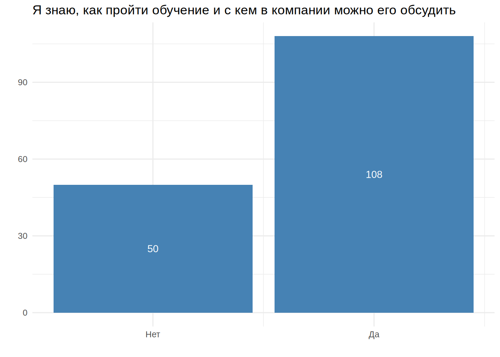

Опрос
Сотрудников студии Kama Games, декабрь 2022 г.
Вводная информация
В опросе приняло участие 158 сотрудника из различных отделов. И он проводился с целью выяснить Вовлечённость сотрудников в рабочие процессы и корпоративные мероприятия. Опрос состоял из 23 утверждения, которые требовали ответа да или нет, и 4 вопроса с ответами в свободной форме. Перечислю утверждения и вопросы:
- Я знаю, чего от меня ожидает компания
- Мой руководитель ставит четкие цели для нашей команды
- Я вижу прямую связь между тем, что я делаю и успехами компании
- В компании есть тот, кто помогает мне развиваться профессионально
- Мой руководитель дает мне обратную связь, которая помогает улучшить мою работу
- Я знаю, как пройти обучение и с кем в компании можно его обсудить
- В компании есть возможности для моего роста и развития
- Компания предоставляет мне все необходимые ресурсы для работы
- Меня устраивает мой компьютер и остальная рабочая техника
- Если в работе что-то идет не по плану, я всегда знаю, кого попросить о помощи
- Мой руководитель регулярно делится со мной актуальной информацией о целях компании
- Я понимаю, куда движется компания и как она планирует развиваться
- Я узнаю новости о изменениях в компании вовремя
- Я знаю, какие роли у ребят в других командах и какими навыками они обладают
- Если я захочу найти в компании эксперта в какой-то области, то легко это сделаю, даже не зная его имени
- Я общаюсь с коллегами за пределами своей команды и/или рабочей группы
- У меня на работе есть друг
- В большинстве случаев мои коллеги качественно выполняют свою работу
- Коллеги всегда оперативно реагируют на мои сообщения и не пропускают их
- Я никогда не пропускаю сообщения от коллег или руководителя
- Я всегда знаю, в какой чат мне написать с вопросом или предложением
- Меня никогда не забывали добавить в нужный рабочий чат
- Я готов рекомендовать нашу компанию своим друзьям и знакомым
- Какие изменения за последний год тебя порадовали?
- Что тебе нравится в компании меньше всего?
- Есть ли в компании что-то, что тормозит твою работу?
- Оставь любой комментарий и мы его прочитаем :)
Взглянем на результаты ответов сотрудников по каждому утверждению.

Проанализируем последние четыре вопроса с помощью частотности слов. Посмотрим какие слова и фразы употреблялись чаще всего в ответах сотрудников.
24. Какие изменения за последний год тебя порадовали?
| word | n |
|---|---|
| офис | 32 |
| дмс | 22 |
| ясно | 11 |
| компании | 10 |
| индексация | 9 |
| переезд | 9 |
| зп | 7 |
| команда | 5 |
| мобилизации | 5 |
| новые | 5 |
| офисе | 5 |
| зарплаты | 4 |
| изменения | 4 |
| камаконф | 4 |
| команды | 4 |
| моей | 4 |
| новом | 4 |
| появление | 4 |
| просторный | 4 |
| процессы | 4 |
| работаю | 4 |
| работы | 4 |
| сотрудникам | 4 |
| стали | 4 |
| стало | 4 |
| увеличение | 4 |
| hr | 3 |
| бесплатный | 3 |
| большое | 3 |
| возможность | 3 |
| изменений | 3 |
| коллектив | 3 |
| корпоратив | 3 |
| месяц | 3 |
| обучение | 3 |
| офиса | 3 |
| период | 3 |
| порадовали | 3 |
| прозрачные | 3 |
| рабочих | 3 |
| расширение | 3 |
| сотрудников | 3 |
| тренингов | 3 |
| dayoff | 2 |
| skyeng | 2 |
| безопасности | 2 |
| бомба | 2 |
| быстро | 2 |
| задачи | 2 |
| знаю | 2 |
| изменение | 2 |
| кама | 2 |
| качество | 2 |
| коллег | 2 |
| коллеги | 2 |
| команде | 2 |
| компанию | 2 |
| конференции | 2 |
| летний | 2 |
| мероприятия | 2 |
| месяца | 2 |
| моментов | 2 |
| написать | 2 |
| направленные | 2 |
| начал | 2 |
| новая | 2 |
| отделе | 2 |
| отношение | 2 |
| повысили | 2 |
| повышение | 2 |
| поддержка | 2 |
| подход | 2 |
| пользоваться | 2 |
| помощь | 2 |
| поэтому | 2 |
| появился | 2 |
| прошел | 2 |
| работу | 2 |
| развитие | 2 |
| рост | 2 |
| руководства | 2 |
| сервис | 2 |
| спорт | 2 |
| хочется | 2 |
| эффективнее | 2 |
| conf | 1 |
| confluence | 1 |
| dayoffов | 1 |
| home | 1 |
| jira | 1 |
| kamaconf | 1 |
| office | 1 |
| workspace | 1 |
| аааааа | 1 |
| активнее | 1 |
| алястартапной | 1 |
| анализ | 1 |
| анализом | 1 |
| англ | 1 |
| английский | 1 |
| андрей | 1 |
| архитектуры | 1 |
| ахс | 1 |
| бадди | 1 |
| беден | 1 |
| бесплатные | 1 |
| бизнес | 1 |
| благодарна | 1 |
| ближе | 1 |
| большей | 1 |
| брать | 1 |
| бутылки | 1 |
| быстрая | 1 |
| бюрократии | 1 |
| векторов | 1 |
| велкомтренингов | 1 |
| версии | 1 |
| версия | 1 |
| веселее | 1 |
| весомым | 1 |
| взаимодействия | 1 |
| внедрение | 1 |
| внеклассным | 1 |
| внерабочих | 1 |
| внешнем | 1 |
| внутренних | 1 |
| внутри | 1 |
| возможностей | 1 |
| возможностями | 1 |
| вопросам | 1 |
| вопросах | 1 |
| воу | 1 |
| всякого | 1 |
| выбор | 1 |
| вышел | 1 |
| графов | 1 |
| греет | 1 |
| группу | 1 |
| давыдов | 1 |
| дальнейшем | 1 |
| двигаться | 1 |
| девушек | 1 |
| дни | 1 |
| добавили | 1 |
| добавление | 1 |
| долгожданный | 1 |
| достоинству | 1 |
| др | 1 |
| другую | 1 |
| дружелюбный | 1 |
| душевная | 1 |
| душу | 1 |
| единожды | 1 |
| желающим | 1 |
| забота | 1 |
| закончились | 1 |
| закончилось | 1 |
| заметил | 1 |
| заметным | 1 |
| занялся | 1 |
| запуск | 1 |
| заработной | 1 |
| зарплат | 1 |
| зарплата | 1 |
| застал | 1 |
| застала | 1 |
| затрат | 1 |
| здорово | 1 |
| здоровом | 1 |
| здоровья | 1 |
| знающую | 1 |
| ивентов | 1 |
| игры | 1 |
| изменились | 1 |
| индивидуальный | 1 |
| инициативный | 1 |
| интересные | 1 |
| используется | 1 |
| кадров | 1 |
| каких | 1 |
| каме | 1 |
| каму | 1 |
| кардинальных | 1 |
| карьерно | 1 |
| касается | 1 |
| классно | 1 |
| климат | 1 |
| клиник | 1 |
| кода | 1 |
| кодом | 1 |
| коды | 1 |
| количества | 1 |
| команд | 1 |
| коммуникабельным | 1 |
| комнату | 1 |
| компенсацией | 1 |
| компенсация | 1 |
| комфортным | 1 |
| контента | 1 |
| конф | 1 |
| конференция | 1 |
| корпоративы | 1 |
| которую | 1 |
| которыми | 1 |
| круто | 1 |
| культура | 1 |
| кухне | 1 |
| кухни | 1 |
| ланч | 1 |
| ланчи | 1 |
| лидов | 1 |
| лично | 1 |
| личностного | 1 |
| лучшую | 1 |
| любопытных | 1 |
| маленьких | 1 |
| маловато | 1 |
| марте | 1 |
| материальном | 1 |
| машинном | 1 |
| мерзну | 1 |
| мероприятие | 1 |
| механик | 1 |
| минимизация | 1 |
| многому | 1 |
| многофункциональный | 1 |
| мобилизациирежим | 1 |
| мобилизация | 1 |
| мое | 1 |
| моих | 1 |
| момент | 1 |
| моральном | 1 |
| мощная | 1 |
| найма | 1 |
| нанимать | 1 |
| насадки | 1 |
| научил | 1 |
| начали | 1 |
| началом | 1 |
| нашем | 1 |
| некоторых | 1 |
| никаких | 1 |
| нового | 1 |
| нормально | 1 |
| ноуты | 1 |
| нравится | 1 |
| нюансов | 1 |
| обновленная | 1 |
| образовательных | 1 |
| обучающих | 1 |
| обучении | 1 |
| общение | 1 |
| огорчает | 1 |
| ограничений | 1 |
| ожидания | 1 |
| оказалась | 1 |
| онбординга | 1 |
| оперативность | 1 |
| оплате | 1 |
| организации | 1 |
| организме | 1 |
| освежает | 1 |
| осмысленный | 1 |
| особо | 1 |
| осталась | 1 |
| отдел | 1 |
| отдела | 1 |
| отделов | 1 |
| отделу | 1 |
| отзывы | 1 |
| офисных | 1 |
| оценка | 1 |
| очевиден | 1 |
| очевидным | 1 |
| ощущаю | 1 |
| ощущениям | 1 |
| падел | 1 |
| память | 1 |
| паркинг | 1 |
| первая | 1 |
| первых | 1 |
| переговорки | 1 |
| переезда | 1 |
| пережить | 1 |
| перейти | 1 |
| переход | 1 |
| перешел | 1 |
| периода | 1 |
| пилотных | 1 |
| пирожинки | 1 |
| платы | 1 |
| поверил | 1 |
| погруженным | 1 |
| подземный | 1 |
| подхода | 1 |
| подходил | 1 |
| пожеланиям | 1 |
| поймут | 1 |
| полагаю | 1 |
| полезных | 1 |
| полной | 1 |
| полном | 1 |
| полноценно | 1 |
| положительные | 1 |
| помогает | 1 |
| помощник | 1 |
| понимания | 1 |
| попробовать | 1 |
| попытки | 1 |
| порадовал | 1 |
| порадовала | 1 |
| порадовало | 1 |
| порой | 1 |
| портал | 1 |
| поскольку | 1 |
| последние | 1 |
| пошел | 1 |
| появились | 1 |
| практически | 1 |
| превратились | 1 |
| предоставлении | 1 |
| прекрасный | 1 |
| прибавка | 1 |
| привилегиями | 1 |
| приложении | 1 |
| примерно | 1 |
| прислушивается | 1 |
| приятно | 1 |
| проведение | 1 |
| проведению | 1 |
| программа | 1 |
| продолжать | 1 |
| продолжить | 1 |
| прозрачность | 1 |
| производства | 1 |
| производстве | 1 |
| производству | 1 |
| происходит | 1 |
| происходят | 1 |
| пролетел | 1 |
| промокод | 1 |
| проработал | 1 |
| просторное | 1 |
| пространства | 1 |
| профессионалов | 1 |
| профессионального | 1 |
| процесс | 1 |
| процесса | 1 |
| процессах | 1 |
| процессов | 1 |
| прошлом | 1 |
| проще | 1 |
| работает | 1 |
| работал | 1 |
| работе | 1 |
| рабочего | 1 |
| рабочее | 1 |
| рада | 1 |
| радости | 1 |
| радуют | 1 |
| развиваться | 1 |
| различных | 1 |
| разминок | 1 |
| разработки | 1 |
| расстановка | 1 |
| растения | 1 |
| растет | 1 |
| расширилась | 1 |
| ребята | 1 |
| ребятами | 1 |
| редко | 1 |
| ресурс | 1 |
| решающим | 1 |
| ровно | 1 |
| рождения | 1 |
| роли | 1 |
| роста | 1 |
| руками | 1 |
| руководителей | 1 |
| руководстве | 1 |
| саппорта | 1 |
| сво | 1 |
| связано | 1 |
| сентябреоктябре | 1 |
| сервиса | 1 |
| сессии | 1 |
| сижу | 1 |
| сильно | 1 |
| симпатичных | 1 |
| симуляций | 1 |
| синхронизироваться | 1 |
| сиропом | 1 |
| скидки | 1 |
| скромно | 1 |
| сложно | 1 |
| слышу | 1 |
| смена | 1 |
| смысле | 1 |
| смятении | 1 |
| собственной | 1 |
| собственный | 1 |
| советам | 1 |
| совместные | 1 |
| созвонов | 1 |
| создания | 1 |
| солар | 1 |
| соне | 1 |
| сопротивления | 1 |
| сотрудниками | 1 |
| сотрудниках | 1 |
| сотрудничество | 1 |
| специальные | 1 |
| сравнение | 1 |
| сравнительный | 1 |
| сталкиваемся | 1 |
| станет | 1 |
| стараюсь | 1 |
| стиля | 1 |
| сторону | 1 |
| стране | 1 |
| страны | 1 |
| страховку | 1 |
| структурированную | 1 |
| структурированными | 1 |
| счет | 1 |
| текущих | 1 |
| теплее | 1 |
| тестировщиком | 1 |
| товарищи | 1 |
| той | 1 |
| топовые | 1 |
| точно | 1 |
| транслируют | 1 |
| тренинги | 1 |
| трудоустройство | 1 |
| трёхминутных | 1 |
| турник | 1 |
| удаленка | 1 |
| удаленно | 1 |
| удаленных | 1 |
| удаленщик | 1 |
| удаленщикам | 1 |
| удалёнка | 1 |
| удобно | 1 |
| узнал | 1 |
| улыбаться | 1 |
| уравнять | 1 |
| уровень | 1 |
| усиленно | 1 |
| успел | 1 |
| установите | 1 |
| устроился | 1 |
| факт | 1 |
| федя | 1 |
| флоу | 1 |
| футбол | 1 |
| хватает | 1 |
| хорошее | 1 |
| хорошими | 1 |
| целом | 1 |
| части | 1 |
| частично | 1 |
| частичной | 1 |
| частью | 1 |
| человеком | 1 |
| человеческое | 1 |
| чтением | 1 |
| чувствую | 1 |
| чём | 1 |
| широкий | 1 |
| штата | 1 |
| этапах | 1 |
| bigram | n |
|---|---|
| дмс офис | 7 |
| переезд офис | 6 |
| индексация зп | 5 |
| новом офисе | 4 |
| офис дмс | 3 |
| просторный офис | 3 |
| бесплатный ясно | 2 |
| дмс skyeng | 2 |
| дмс ясно | 2 |
| зп дмс | 2 |
| летний корпоратив | 2 |
| мероприятия направленные | 2 |
| офис новые | 2 |
| офис офис | 2 |
| офис просторный | 2 |
| повышение зарплаты | 2 |
| появление дмс | 2 |
| прозрачные процессы | 2 |
| работаю месяца | 2 |
| сотрудникам мобилизации | 2 |
| стали прозрачные | 2 |
| conf отношение | 1 |
| confluence бесплатный | 1 |
| dayoff home | 1 |
| dayoff индексация | 1 |
| dayoffов повышение | 1 |
| home office | 1 |
| hr вышел | 1 |
| hr дмс | 1 |
| hr полезных | 1 |
| jira confluence | 1 |
| kamaconf бесплатный | 1 |
| office новые | 1 |
| skyeng индексация | 1 |
| skyeng совместные | 1 |
| workspace стало | 1 |
| аааааа порадовали | 1 |
| активнее пользоваться | 1 |
| алястартапной компании | 1 |
| анализ месяц | 1 |
| анализом векторов | 1 |
| англ офис | 1 |
| английский повышение | 1 |
| андрей давыдов | 1 |
| архитектуры начали | 1 |
| ахс новом | 1 |
| бадди изменения | 1 |
| беден радости | 1 |
| безопасности каких | 1 |
| безопасности нравится | 1 |
| бесплатные коды | 1 |
| бесплатный удаленка | 1 |
| бизнес ланчи | 1 |
| благодарна каме | 1 |
| ближе команде | 1 |
| большей безопасности | 1 |
| большое развитие | 1 |
| большое соне | 1 |
| большое человеческое | 1 |
| бомба изменение | 1 |
| бомба появился | 1 |
| брать руками | 1 |
| бутылки сиропом | 1 |
| быстрая помощь | 1 |
| быстро закончилось | 1 |
| быстро научил | 1 |
| бюрократии оценка | 1 |
| векторов графов | 1 |
| велкомтренингов процесса | 1 |
| версии игры | 1 |
| версия дни | 1 |
| веселее команда | 1 |
| весомым моей | 1 |
| взаимодействия порадовали | 1 |
| внедрение велкомтренингов | 1 |
| внеклассным чтением | 1 |
| внерабочих процессах | 1 |
| внешнем изменились | 1 |
| внутренних внерабочих | 1 |
| внутри отделов | 1 |
| возможностей dayoffов | 1 |
| возможность dayoff | 1 |
| возможность выбор | 1 |
| возможность перейти | 1 |
| возможностями компании | 1 |
| вопросам которыми | 1 |
| вопросах индексация | 1 |
| воу первая | 1 |
| всякого трудоустройство | 1 |
| выбор очевиден | 1 |
| вышел работу | 1 |
| графов хочется | 1 |
| греет душу | 1 |
| группу разработки | 1 |
| давыдов коммуникабельным | 1 |
| дальнейшем станет | 1 |
| двигаться компанию | 1 |
| девушек обучение | 1 |
| дмс англ | 1 |
| дмс бесплатные | 1 |
| дмс здорово | 1 |
| дмс индексация | 1 |
| дмс переезд | 1 |
| дмс порадовали | 1 |
| дмс портал | 1 |
| дмс появление | 1 |
| дмс страховку | 1 |
| дмс тренинги | 1 |
| дмс факт | 1 |
| дни рождения | 1 |
| добавили специальные | 1 |
| добавление сервиса | 1 |
| долгожданный переезд | 1 |
| достоинству качество | 1 |
| др офис | 1 |
| другую группу | 1 |
| дружелюбный коллектив | 1 |
| душевная команда | 1 |
| душу нюансов | 1 |
| единожды мероприятия | 1 |
| желающим продолжить | 1 |
| забота компании | 1 |
| задачи порадовал | 1 |
| задачи проведению | 1 |
| закончились появился | 1 |
| закончилось летний | 1 |
| заметил сервис | 1 |
| заметным андрей | 1 |
| занялся внеклассным | 1 |
| запуск пилотных | 1 |
| заработной платы | 1 |
| зарплат офис | 1 |
| зарплата офис | 1 |
| зарплаты компенсация | 1 |
| зарплаты переход | 1 |
| зарплаты промокод | 1 |
| зарплаты сво | 1 |
| застал начал | 1 |
| застала изменений | 1 |
| затрат спорт | 1 |
| здорово маловато | 1 |
| здоровом организме | 1 |
| здоровья маленьких | 1 |
| знаю индексация | 1 |
| знаю прошел | 1 |
| знающую двигаться | 1 |
| зп марте | 1 |
| зп новые | 1 |
| зп повысили | 1 |
| зп смена | 1 |
| зп удалёнка | 1 |
| ивентов дмс | 1 |
| игры новые | 1 |
| изменение некоторых | 1 |
| изменение подхода | 1 |
| изменений долгожданный | 1 |
| изменений застал | 1 |
| изменений особо | 1 |
| изменения предоставлении | 1 |
| изменения происходят | 1 |
| изменения скромно | 1 |
| изменения успел | 1 |
| изменились процесс | 1 |
| индексация заработной | 1 |
| индексация зарплаты | 1 |
| индексация конференции | 1 |
| индексация расширение | 1 |
| индивидуальный подход | 1 |
| инициативный отдел | 1 |
| интересные задачи | 1 |
| используется ресурс | 1 |
| кадров руководстве | 1 |
| каких ограничений | 1 |
| кама conf | 1 |
| кама конф | 1 |
| камаконф переговорки | 1 |
| камаконф период | 1 |
| камаконф помощь | 1 |
| камаконф прошел | 1 |
| каме происходит | 1 |
| каму дмс | 1 |
| кардинальных изменений | 1 |
| карьерно пошел | 1 |
| касается стиля | 1 |
| качество кода | 1 |
| качество моей | 1 |
| классно поверил | 1 |
| климат внутри | 1 |
| клиник офис | 1 |
| кода касается | 1 |
| кодом задачи | 1 |
| коды ясно | 1 |
| количества возможностей | 1 |
| коллег лидов | 1 |
| коллег оперативность | 1 |
| коллеги отделе | 1 |
| коллеги отделу | 1 |
| коллектив коллеги | 1 |
| коллектив компании | 1 |
| коллектив работал | 1 |
| команд офис | 1 |
| команда hr | 1 |
| команда прислушивается | 1 |
| команда растет | 1 |
| команда расширилась | 1 |
| команда саппорта | 1 |
| команде коллектив | 1 |
| команде той | 1 |
| команды зп | 1 |
| команды моих | 1 |
| команды нормально | 1 |
| команды проведение | 1 |
| коммуникабельным комфортным | 1 |
| комнату здоровья | 1 |
| компании здоровом | 1 |
| компании личностного | 1 |
| компании минимизация | 1 |
| компании написать | 1 |
| компании ощущениям | 1 |
| компании появление | 1 |
| компании превратились | 1 |
| компании сотрудникам | 1 |
| компании сотрудниках | 1 |
| компании хорошее | 1 |
| компанию стали | 1 |
| компанию эффективнее | 1 |
| компенсацией оплате | 1 |
| компенсация затрат | 1 |
| комфортным человеком | 1 |
| контента приложении | 1 |
| конф знаю | 1 |
| конференции корпоративы | 1 |
| конференции помогает | 1 |
| конференция компании | 1 |
| корпоратив др | 1 |
| корпоратив работаю | 1 |
| корпоратив хочется | 1 |
| корпоративы ланч | 1 |
| которую транслируют | 1 |
| которыми редко | 1 |
| круто никаких | 1 |
| культура которую | 1 |
| кухне офис | 1 |
| кухни индексация | 1 |
| ланч бадди | 1 |
| ланчи закончились | 1 |
| лидов греет | 1 |
| лично последние | 1 |
| личностного профессионального | 1 |
| лучшую сторону | 1 |
| любопытных тренингов | 1 |
| маленьких трёхминутных | 1 |
| маловато клиник | 1 |
| марте поддержка | 1 |
| материальном моральном | 1 |
| машинном обучении | 1 |
| мерзну работе | 1 |
| мероприятие устроился | 1 |
| месяц внедрение | 1 |
| месяц поэтому | 1 |
| месяца аааааа | 1 |
| месяца кардинальных | 1 |
| механик счет | 1 |
| минимизация бюрократии | 1 |
| многому ощущаю | 1 |
| многофункциональный растения | 1 |
| мобилизации возможность | 1 |
| мобилизации летний | 1 |
| мобилизации полноценно | 1 |
| мобилизации просторный | 1 |
| мобилизации решающим | 1 |
| мобилизациирежим работы | 1 |
| мобилизация офис | 1 |
| мое развитие | 1 |
| моей команды | 1 |
| моей работы | 1 |
| моей роли | 1 |
| моей собственной | 1 |
| моих руководителей | 1 |
| момент сентябреоктябре | 1 |
| моментов моментов | 1 |
| моментов рабочих | 1 |
| моральном смысле | 1 |
| мощная душевная | 1 |
| найма климат | 1 |
| нанимать симпатичных | 1 |
| написать огорчает | 1 |
| написать радуют | 1 |
| направленные обучение | 1 |
| направленные общение | 1 |
| насадки бутылки | 1 |
| научил многому | 1 |
| начал офис | 1 |
| начал усиленно | 1 |
| начали активнее | 1 |
| началом мобилизации | 1 |
| нашем отделе | 1 |
| некоторых рабочих | 1 |
| никаких расширение | 1 |
| новая зарплата | 1 |
| новая расстановка | 1 |
| нового контента | 1 |
| новые версии | 1 |
| новые коллеги | 1 |
| новые ноуты | 1 |
| новые офис | 1 |
| новые флоу | 1 |
| нормально компании | 1 |
| ноуты появление | 1 |
| нравится нашем | 1 |
| нюансов сопротивления | 1 |
| обновленная версия | 1 |
| образовательных ивентов | 1 |
| обучающих созвонов | 1 |
| обучение единожды | 1 |
| обучение кадров | 1 |
| обучение культура | 1 |
| обучении занялся | 1 |
| общение руководства | 1 |
| огорчает воу | 1 |
| ограничений момент | 1 |
| ожидания моей | 1 |
| оказалась возможность | 1 |
| онбординга запуск | 1 |
| оперативность различных | 1 |
| оплате беден | 1 |
| организации работы | 1 |
| организме сравнение | 1 |
| освежает память | 1 |
| осмысленный подход | 1 |
| особо заметил | 1 |
| осталась офисе | 1 |
| отдел hr | 1 |
| отдела карьерно | 1 |
| отделе инициативный | 1 |
| отделе стали | 1 |
| отделов прозрачность | 1 |
| отделу команда | 1 |
| отзывы порой | 1 |
| отношение компании | 1 |
| отношение сотрудникам | 1 |
| офис kamaconf | 1 |
| офис бомба | 1 |
| офис дружелюбный | 1 |
| офис изменения | 1 |
| офис индексация | 1 |
| офис кама | 1 |
| офис коллектив | 1 |
| офис мероприятия | 1 |
| офис мое | 1 |
| офис новая | 1 |
| офис обучающих | 1 |
| офис подземный | 1 |
| офис появились | 1 |
| офис появление | 1 |
| офис прекрасный | 1 |
| офис программа | 1 |
| офис просторное | 1 |
| офис расширение | 1 |
| офис рост | 1 |
| офис связано | 1 |
| офис сложно | 1 |
| офис увеличение | 1 |
| офис целом | 1 |
| офиса добавление | 1 |
| офиса рабочего | 1 |
| офиса увеличение | 1 |
| офисе дмс | 1 |
| офисе забота | 1 |
| офисе офис | 1 |
| офисе работаю | 1 |
| офисе стало | 1 |
| офисных удаленных | 1 |
| оценка достоинству | 1 |
| очевиден продолжать | 1 |
| очевидным весомым | 1 |
| ощущаю собственный | 1 |
| ощущениям стали | 1 |
| падел дмс | 1 |
| память вопросам | 1 |
| паркинг новом | 1 |
| первая тестировщиком | 1 |
| первых этапах | 1 |
| переговорки новом | 1 |
| переезд благодарна | 1 |
| переезд большое | 1 |
| переезд офиса | 1 |
| переезда дмс | 1 |
| пережить переезд | 1 |
| перейти солар | 1 |
| переход другую | 1 |
| перешел отдела | 1 |
| период мобилизации | 1 |
| период частичной | 1 |
| период ясно | 1 |
| периода примерно | 1 |
| пилотных тренингов | 1 |
| пирожинки кухне | 1 |
| платы переезд | 1 |
| поверил первых | 1 |
| повысили качество | 1 |
| повысили уровень | 1 |
| погруженным сотрудникам | 1 |
| поддержка период | 1 |
| поддержка руководства | 1 |
| подземный паркинг | 1 |
| подход мощная | 1 |
| подход производству | 1 |
| подхода организации | 1 |
| подходил лично | 1 |
| пожеланиям сотрудников | 1 |
| поймут чём | 1 |
| полагаю дальнейшем | 1 |
| полезных образовательных | 1 |
| полной компенсацией | 1 |
| полном смятении | 1 |
| полноценно удаленно | 1 |
| положительные отзывы | 1 |
| пользоваться jira | 1 |
| пользоваться привилегиями | 1 |
| помогает синхронизироваться | 1 |
| помощник федя | 1 |
| помощь коллег | 1 |
| помощь сотрудникам | 1 |
| понимания количества | 1 |
| попробовать машинном | 1 |
| попытки уравнять | 1 |
| порадовал переезд | 1 |
| порадовала кама | 1 |
| порадовали дмс | 1 |
| порадовали просторный | 1 |
| порадовали проще | 1 |
| порадовало добавили | 1 |
| порой коллег | 1 |
| портал камаконф | 1 |
| поскольку удаленщик | 1 |
| последние перешел | 1 |
| пошел начал | 1 |
| поэтому порадовало | 1 |
| поэтому сравнительный | 1 |
| появились процессы | 1 |
| появился дмс | 1 |
| появился помощник | 1 |
| появление понимания | 1 |
| появление тренингов | 1 |
| практически полной | 1 |
| превратились структурированную | 1 |
| предоставлении dayoff | 1 |
| прекрасный сервис | 1 |
| прибавка зп | 1 |
| привилегиями возможностями | 1 |
| приложении отношение | 1 |
| примерно ровно | 1 |
| прислушивается советам | 1 |
| приятно компанию | 1 |
| проведение конференции | 1 |
| проведению симуляций | 1 |
| программа ясно | 1 |
| продолжать работу | 1 |
| продолжить сотрудничество | 1 |
| прозрачность процессов | 1 |
| прозрачные переезд | 1 |
| производства прозрачные | 1 |
| производстве сильно | 1 |
| производству нового | 1 |
| происходит рабочих | 1 |
| происходят лучшую | 1 |
| пролетел быстро | 1 |
| промокод сессии | 1 |
| проработал конференция | 1 |
| просторное рабочее | 1 |
| просторный многофункциональный | 1 |
| пространства застала | 1 |
| профессионалов проработал | 1 |
| профессионального роста | 1 |
| процесс найма | 1 |
| процесса онбординга | 1 |
| процессах пролетел | 1 |
| процессов сотрудников | 1 |
| процессы изменения | 1 |
| процессы компании | 1 |
| процессы ожидания | 1 |
| процессы производстве | 1 |
| прошел работаю | 1 |
| прошел стали | 1 |
| прошлом обновленная | 1 |
| проще написать | 1 |
| работает установите | 1 |
| работал компании | 1 |
| работаю дмс | 1 |
| работаю месяц | 1 |
| работе команда | 1 |
| работу большое | 1 |
| работу поэтому | 1 |
| работы индивидуальный | 1 |
| работы кодом | 1 |
| работы команд | 1 |
| работы материальном | 1 |
| рабочего пространства | 1 |
| рабочее стало | 1 |
| рабочих внутренних | 1 |
| рабочих механик | 1 |
| рабочих прошлом | 1 |
| рада частью | 1 |
| радости улыбаться | 1 |
| радуют товарищи | 1 |
| развиваться всякого | 1 |
| развитие моей | 1 |
| развитие обучение | 1 |
| различных вопросах | 1 |
| разминок ребята | 1 |
| разработки переезд | 1 |
| расстановка сижу | 1 |
| растения большое | 1 |
| растет интересные | 1 |
| расширение офиса | 1 |
| расширение производства | 1 |
| расширение штата | 1 |
| расширилась хорошими | 1 |
| ребята поймут | 1 |
| ребятами камаконф | 1 |
| редко сталкиваемся | 1 |
| ресурс профессионалов | 1 |
| решающим оказалась | 1 |
| ровно дмс | 1 |
| рождения прибавка | 1 |
| роли процессы | 1 |
| рост изменения | 1 |
| рост команды | 1 |
| роста спорт | 1 |
| руками быстрая | 1 |
| руководителей внешнем | 1 |
| руководства мобилизации | 1 |
| руководства сотрудниками | 1 |
| руководстве стало | 1 |
| саппорта топовые | 1 |
| сво приятно | 1 |
| связано увеличение | 1 |
| сентябреоктябре полном | 1 |
| сервис ахс | 1 |
| сервис ясно | 1 |
| сервиса ясно | 1 |
| сессии ясно | 1 |
| сижу ближе | 1 |
| сильно осмысленный | 1 |
| симпатичных девушек | 1 |
| симуляций анализом | 1 |
| синхронизироваться погруженным | 1 |
| сиропом брать | 1 |
| скидки камаконф | 1 |
| скромно полагаю | 1 |
| сложно дмс | 1 |
| слышу положительные | 1 |
| смена офиса | 1 |
| смысле повысили | 1 |
| смятении узнал | 1 |
| собственной команды | 1 |
| собственный рост | 1 |
| советам пожеланиям | 1 |
| совместные бизнес | 1 |
| созвонов освежает | 1 |
| создания workspace | 1 |
| солар началом | 1 |
| соне дмс | 1 |
| сопротивления части | 1 |
| сотрудникам желающим | 1 |
| сотрудникам удаленщикам | 1 |
| сотрудниками быстро | 1 |
| сотрудниках период | 1 |
| сотрудников рада | 1 |
| сотрудников слышу | 1 |
| сотрудников частично | 1 |
| сотрудничество стране | 1 |
| специальные насадки | 1 |
| спорт поскольку | 1 |
| спорт футбол | 1 |
| сравнение текущих | 1 |
| сравнительный анализ | 1 |
| стали нанимать | 1 |
| стали структурированными | 1 |
| сталкиваемся широкий | 1 |
| стало веселее | 1 |
| стало заметным | 1 |
| стало теплее | 1 |
| стало удобно | 1 |
| станет очевидным | 1 |
| стараюсь пользоваться | 1 |
| стиля архитектуры | 1 |
| сторону команда | 1 |
| стране офис | 1 |
| страны безопасности | 1 |
| страховку камаконф | 1 |
| структурированную знающую | 1 |
| структурированными переезд | 1 |
| счет создания | 1 |
| текущих моментов | 1 |
| теплее мерзну | 1 |
| тестировщиком классно | 1 |
| товарищи команде | 1 |
| той осталась | 1 |
| топовые дмс | 1 |
| точно знаю | 1 |
| транслируют hr | 1 |
| тренинги ясно | 1 |
| тренингов дмс | 1 |
| тренингов офис | 1 |
| тренингов порадовала | 1 |
| трудоустройство каму | 1 |
| трёхминутных разминок | 1 |
| турник хватает | 1 |
| увеличение зарплат | 1 |
| увеличение зарплаты | 1 |
| увеличение кухни | 1 |
| увеличение скидки | 1 |
| удаленка мобилизация | 1 |
| удаленно страны | 1 |
| удаленных сотрудников | 1 |
| удаленщик изменений | 1 |
| удаленщикам попытки | 1 |
| удалёнка работаю | 1 |
| удобно переезд | 1 |
| узнал возможность | 1 |
| улыбаться новая | 1 |
| уравнять офисных | 1 |
| уровень работы | 1 |
| усиленно развиваться | 1 |
| успел пережить | 1 |
| установите турник | 1 |
| устроился периода | 1 |
| факт переезда | 1 |
| федя бомба | 1 |
| флоу круто | 1 |
| футбол падел | 1 |
| хватает новом | 1 |
| хорошее мероприятие | 1 |
| хорошими ребятами | 1 |
| хочется комнату | 1 |
| хочется попробовать | 1 |
| целом стараюсь | 1 |
| части команды | 1 |
| частично любопытных | 1 |
| частичной мобилизациирежим | 1 |
| частью компании | 1 |
| человеком взаимодействия | 1 |
| человеческое пирожинки | 1 |
| чтением работает | 1 |
| чувствую большей | 1 |
| чём подходил | 1 |
| широкий офис | 1 |
| штата индексация | 1 |
| этапах точно | 1 |
| эффективнее используется | 1 |
| эффективнее эффективнее | 1 |
| ясно алястартапной | 1 |
| ясно английский | 1 |
| ясно бесплатный | 1 |
| ясно дмс | 1 |
| ясно изменение | 1 |
| ясно индексация | 1 |
| ясно корпоратив | 1 |
| ясно поддержка | 1 |
| ясно практически | 1 |
| ясно увеличение | 1 |
| ясно чувствую | 1 |
25. Что тебе нравится в компании меньше всего?
| word | n |
|---|---|
| отсутствие | 32 |
| нравится | 15 |
| компании | 11 |
| работы | 9 |
| сотрудникам | 9 |
| возможности | 7 |
| офис | 7 |
| зп | 6 |
| курилки | 6 |
| кухне | 6 |
| отделами | 6 |
| сотрудников | 6 |
| удаленке | 6 |
| задач | 5 |
| задачи | 5 |
| кофе | 5 |
| отдела | 5 |
| хотелось | 5 |
| компанией | 4 |
| налогов | 4 |
| например | 4 |
| отношение | 4 |
| процессов | 4 |
| работе | 4 |
| работу | 4 |
| сильно | 4 |
| сотрудники | 4 |
| соц | 4 |
| стороны | 4 |
| страны | 4 |
| удаленной | 4 |
| удаленным | 4 |
| дмс | 3 |
| задачу | 3 |
| занимаются | 3 |
| количество | 3 |
| компания | 3 |
| месяц | 3 |
| некоторые | 3 |
| некоторых | 3 |
| отделе | 3 |
| отличаются | 3 |
| офисе | 3 |
| полезно | 3 |
| понимания | 3 |
| рабочие | 3 |
| роста | 3 |
| ситуации | 3 |
| сложно | 3 |
| удалённо | 3 |
| хлеба | 3 |
| целом | 3 |
| free | 2 |
| абсолютно | 2 |
| аналитики | 2 |
| быстрее | 2 |
| внезапно | 2 |
| внутри | 2 |
| возможность | 2 |
| возникают | 2 |
| вопросах | 2 |
| вопросы | 2 |
| геимз | 2 |
| грабли | 2 |
| графика | 2 |
| грейдов | 2 |
| даются | 2 |
| делается | 2 |
| деле | 2 |
| дольше | 2 |
| думаю | 2 |
| занимается | 2 |
| зарплаты | 2 |
| затрудняюсь | 2 |
| знаю | 2 |
| знают | 2 |
| изменению | 2 |
| кабины | 2 |
| кама | 2 |
| классика | 2 |
| коммуникация | 2 |
| компенсации | 2 |
| корпоративов | 2 |
| которым | 2 |
| кофепоинте | 2 |
| кпд | 2 |
| курительной | 2 |
| лифты | 2 |
| людей | 2 |
| людям | 2 |
| маркетинга | 2 |
| места | 2 |
| мыла | 2 |
| налоги | 2 |
| направлениям | 2 |
| находятся | 2 |
| нашей | 2 |
| необходимо | 2 |
| неплохо | 2 |
| непрозрачность | 2 |
| новой | 2 |
| новые | 2 |
| одном | 2 |
| оперативно | 2 |
| отдел | 2 |
| отдельно | 2 |
| отпуска | 2 |
| офиса | 2 |
| очередь | 2 |
| переводе | 2 |
| переезд | 2 |
| перспективах | 2 |
| печенек | 2 |
| покупку | 2 |
| понимаю | 2 |
| появляются | 2 |
| приходится | 2 |
| проблемы | 2 |
| прозрачности | 2 |
| процессах | 2 |
| процессы | 2 |
| прошел | 2 |
| работают | 2 |
| рабочих | 2 |
| развитие | 2 |
| разы | 2 |
| слабая | 2 |
| сложности | 2 |
| случае | 2 |
| сотрудника | 2 |
| список | 2 |
| стран | 2 |
| стране | 2 |
| суммарно | 2 |
| таких | 2 |
| таком | 2 |
| техники | 2 |
| тратить | 2 |
| тяжело | 2 |
| удаленки | 2 |
| удаленно | 2 |
| уплачивать | 2 |
| уровень | 2 |
| фиксированные | 2 |
| хватает | 2 |
| четких | 2 |
| ясно | 2 |
| artplay | 1 |
| d | 1 |
| n | 1 |
| skyeng | 1 |
| solorstaff | 1 |
| активности | 1 |
| амортизация | 1 |
| априори | 1 |
| атмосферы | 1 |
| аутсорсера | 1 |
| бездушный | 1 |
| белых | 1 |
| бесплатную | 1 |
| библиотеки | 1 |
| бизнеспроцессов | 1 |
| больших | 1 |
| британском | 1 |
| брокколи | 1 |
| бывают | 1 |
| быстро | 1 |
| быстрому | 1 |
| бытовыми | 1 |
| бюрократическими | 1 |
| бюрократия | 1 |
| вату | 1 |
| ведро | 1 |
| вектора | 1 |
| веленью | 1 |
| верная | 1 |
| вероятно | 1 |
| вести | 1 |
| вечная | 1 |
| вечном | 1 |
| вещи | 1 |
| взаимодействие | 1 |
| взаимоотношения | 1 |
| виде | 1 |
| видения | 1 |
| видимо | 1 |
| видит | 1 |
| вижу | 1 |
| вклад | 1 |
| вкусных | 1 |
| влиться | 1 |
| влияет | 1 |
| внезапных | 1 |
| внутриполитический | 1 |
| вовлеченность | 1 |
| вовсе | 1 |
| возможностей | 1 |
| возможностью | 1 |
| возникающим | 1 |
| возникнут | 1 |
| воняет | 1 |
| вопросами | 1 |
| вроде | 1 |
| всей | 1 |
| вспомнить | 1 |
| встречаются | 1 |
| вторая | 1 |
| выбор | 1 |
| выглядит | 1 |
| выдать | 1 |
| выделяют | 1 |
| выехать | 1 |
| вызывает | 1 |
| вызывала | 1 |
| вызывать | 1 |
| выплат | 1 |
| выплата | 1 |
| выполнили | 1 |
| выполнить | 1 |
| выполняемой | 1 |
| выросла | 1 |
| выстраивание | 1 |
| выстроить | 1 |
| гибкости | 1 |
| гибридного | 1 |
| гибриднойудаленной | 1 |
| гораздо | 1 |
| горизонтального | 1 |
| горшков | 1 |
| готовы | 1 |
| готовых | 1 |
| грунт | 1 |
| д | 1 |
| дальнейшем | 1 |
| дартс | 1 |
| даётся | 1 |
| двг | 1 |
| дгвг | 1 |
| девушек | 1 |
| дейли | 1 |
| делает | 1 |
| делают | 1 |
| делится | 1 |
| джунампрограммистам | 1 |
| диванчики | 1 |
| директора | 1 |
| дисбаланс | 1 |
| дней | 1 |
| дня | 1 |
| добавлять | 1 |
| добираться | 1 |
| доволен | 1 |
| дойти | 1 |
| доказать | 1 |
| документов | 1 |
| долгие | 1 |
| должность | 1 |
| должны | 1 |
| дома | 1 |
| дорогая | 1 |
| достаточно | 1 |
| доступно | 1 |
| др | 1 |
| друга | 1 |
| другвокруг | 1 |
| другим | 1 |
| другими | 1 |
| дубай | 1 |
| дух | 1 |
| дэй | 1 |
| еды | 1 |
| ехать | 1 |
| жалею | 1 |
| жаль | 1 |
| живет | 1 |
| жилье | 1 |
| жилья | 1 |
| забрали | 1 |
| загрузки | 1 |
| задача | 1 |
| задерживаешься | 1 |
| задумывался | 1 |
| заканчиваются | 1 |
| законам | 1 |
| законов | 1 |
| законодательству | 1 |
| закончилась | 1 |
| закостенелые | 1 |
| запрет | 1 |
| заработной | 1 |
| здороваются | 1 |
| злоупотреблял | 1 |
| знаем | 1 |
| знаком | 1 |
| значимо | 1 |
| золотые | 1 |
| зоны | 1 |
| зёрна | 1 |
| ивенты | 1 |
| идет | 1 |
| излишне | 1 |
| изменения | 1 |
| изменениям | 1 |
| изначально | 1 |
| изолированности | 1 |
| изредка | 1 |
| изыскивать | 1 |
| имен | 1 |
| имени | 1 |
| именинников | 1 |
| имею | 1 |
| иначе | 1 |
| индексация | 1 |
| иной | 1 |
| инструментами | 1 |
| интерент | 1 |
| интриги | 1 |
| инфляции | 1 |
| информации | 1 |
| информация | 1 |
| исполнительного | 1 |
| используются | 1 |
| итшное | 1 |
| каждого | 1 |
| казино | 1 |
| какие | 1 |
| каких | 1 |
| камеры | 1 |
| каму | 1 |
| кардинально | 1 |
| карьерного | 1 |
| касаемо | 1 |
| кастомнуей | 1 |
| катают | 1 |
| качестве | 1 |
| каша | 1 |
| квартал | 1 |
| кисляк | 1 |
| классная | 1 |
| классно | 1 |
| классный | 1 |
| ключевые | 1 |
| книги | 1 |
| ко | 1 |
| ковра | 1 |
| коллега | 1 |
| коллегами | 1 |
| коллектива | 1 |
| команда | 1 |
| командами | 1 |
| команды | 1 |
| коммуникации | 1 |
| коммуникаций | 1 |
| коммуникацию | 1 |
| комнатных | 1 |
| компаниях | 1 |
| кондишку | 1 |
| консультирует | 1 |
| контекст | 1 |
| корне | 1 |
| корпоративная | 1 |
| корпоративный | 1 |
| которое | 1 |
| которому | 1 |
| которыми | 1 |
| кофейные | 1 |
| кофепоинт | 1 |
| кофепоинтах | 1 |
| кофепойнт | 1 |
| кофепойнтах | 1 |
| красивых | 1 |
| красный | 1 |
| кратчайшие | 1 |
| креселмешков | 1 |
| кресла | 1 |
| критериев | 1 |
| критично | 1 |
| крутым | 1 |
| культура | 1 |
| купить | 1 |
| курить | 1 |
| курсе | 1 |
| курящим | 1 |
| кухню | 1 |
| летят | 1 |
| литературой | 1 |
| лифта | 1 |
| лиц | 1 |
| личностей | 1 |
| личным | 1 |
| ложится | 1 |
| локация | 1 |
| ломается | 1 |
| лушче | 1 |
| ля | 1 |
| максимально | 1 |
| максимум | 1 |
| малое | 1 |
| малый | 1 |
| масштаб | 1 |
| материального | 1 |
| мебели | 1 |
| международные | 1 |
| меняется | 1 |
| месседжер | 1 |
| местам | 1 |
| местами | 1 |
| месяца | 1 |
| месяцев | 1 |
| мешающий | 1 |
| миграционные | 1 |
| микроволновки | 1 |
| микроволновку | 1 |
| минимум | 1 |
| минуса | 1 |
| мире | 1 |
| мировом | 1 |
| миссия | 1 |
| митингов | 1 |
| младших | 1 |
| многие | 1 |
| многих | 1 |
| моментов | 1 |
| морозе | 1 |
| москву | 1 |
| москвы | 1 |
| мотивации | 1 |
| мошки | 1 |
| мою | 1 |
| мск | 1 |
| мягко | 1 |
| н | 1 |
| наболело | 1 |
| наверное | 1 |
| навстречу | 1 |
| найм | 1 |
| налажены | 1 |
| наличие | 1 |
| налоге | 1 |
| налоговому | 1 |
| налоговый | 1 |
| налоговым | 1 |
| наоборот | 1 |
| написано | 1 |
| напитками | 1 |
| напитки | 1 |
| нареканий | 1 |
| наступать | 1 |
| наступивший | 1 |
| начал | 1 |
| начале | 1 |
| начинается | 1 |
| невкусное | 1 |
| негативное | 1 |
| негибкая | 1 |
| неделю | 1 |
| незаконно | 1 |
| нейросетки | 1 |
| нелогичное | 1 |
| необходимое | 1 |
| необходимость | 1 |
| неприятными | 1 |
| непрозрачное | 1 |
| неравномерное | 1 |
| неслаженное | 1 |
| неудобно | 1 |
| неудобства | 1 |
| неуплатой | 1 |
| никак | 1 |
| новую | 1 |
| нормально | 1 |
| нужную | 1 |
| нужны | 1 |
| обедов | 1 |
| обернуться | 1 |
| обеспечение | 1 |
| обложением | 1 |
| обозначениями | 1 |
| обозначены | 1 |
| оборудования | 1 |
| общаться | 1 |
| общение | 1 |
| общения | 1 |
| объему | 1 |
| одинаковое | 1 |
| одинаковые | 1 |
| одинокий | 1 |
| одни | 1 |
| одним | 1 |
| одновременно | 1 |
| ожидание | 1 |
| ок | 1 |
| окончанию | 1 |
| октябрь | 1 |
| определены | 1 |
| опыта | 1 |
| опытным | 1 |
| опытом | 1 |
| орган | 1 |
| организации | 1 |
| организационных | 1 |
| ориентироваться | 1 |
| основным | 1 |
| ответственных | 1 |
| ответти | 1 |
| отвечает | 1 |
| отвечать | 1 |
| отвратительные | 1 |
| отданы | 1 |
| отделах | 1 |
| отделов | 1 |
| отделом | 1 |
| отделу | 1 |
| отдельных | 1 |
| отказа | 1 |
| откуп | 1 |
| отличаться | 1 |
| относительно | 1 |
| относится | 1 |
| отпуск | 1 |
| отстуствие | 1 |
| отсутсвие | 1 |
| офисным | 1 |
| офф | 1 |
| оценка | 1 |
| оценке | 1 |
| очного | 1 |
| пакет | 1 |
| пакета | 1 |
| пакете | 1 |
| партнёрам | 1 |
| пахнет | 1 |
| первого | 1 |
| первую | 1 |
| первые | 1 |
| переведут | 1 |
| переводы | 1 |
| переговорах | 1 |
| переговорки | 1 |
| передай | 1 |
| переехали | 1 |
| пережаренный | 1 |
| перекуры | 1 |
| перерывы | 1 |
| пересмотра | 1 |
| пересмотреть | 1 |
| перестройка | 1 |
| печений | 1 |
| пиздец | 1 |
| пинг | 1 |
| пить | 1 |
| плане | 1 |
| платится | 1 |
| платы | 1 |
| плохая | 1 |
| плохо | 1 |
| плохой | 1 |
| плюсы | 1 |
| плюшек | 1 |
| плюшку | 1 |
| побольше | 1 |
| повлиять | 1 |
| поводов | 1 |
| поддержи | 1 |
| поддержки | 1 |
| поддержкой | 1 |
| подобными | 1 |
| подойти | 1 |
| подписанием | 1 |
| подходит | 1 |
| подходы | 1 |
| подходящими | 1 |
| позиция | 1 |
| поимеет | 1 |
| поиски | 1 |
| пойдет | 1 |
| покера | 1 |
| покупки | 1 |
| полагая | 1 |
| политика | 1 |
| политику | 1 |
| поломки | 1 |
| полугодие | 1 |
| получается | 1 |
| пользу | 1 |
| помимо | 1 |
| помог | 1 |
| помогает | 1 |
| помочь | 1 |
| помощи | 1 |
| помощь | 1 |
| помоями | 1 |
| понг | 1 |
| понесет | 1 |
| понятны | 1 |
| понятными | 1 |
| попасть | 1 |
| пополнить | 1 |
| попросили | 1 |
| поработать | 1 |
| порой | 1 |
| портале | 1 |
| последствиями | 1 |
| поставленная | 1 |
| постоянно | 1 |
| постоянные | 1 |
| потеря | 1 |
| потратить | 1 |
| праве | 1 |
| пребывания | 1 |
| пребываю | 1 |
| предлагаю | 1 |
| представление | 1 |
| представления | 1 |
| представляли | 1 |
| представляю | 1 |
| прежнему | 1 |
| презентации | 1 |
| пренебрежение | 1 |
| привык | 1 |
| примерно | 1 |
| примеру | 1 |
| примиряюсь | 1 |
| приносит | 1 |
| принципа | 1 |
| принятию | 1 |
| приходит | 1 |
| причинам | 1 |
| пришлось | 1 |
| проблем | 1 |
| проблемам | 1 |
| проводить | 1 |
| программисты | 1 |
| продолжать | 1 |
| продукт | 1 |
| продуктов | 1 |
| продуктом | 1 |
| проецирование | 1 |
| прозрачная | 1 |
| пройденный | 1 |
| пройти | 1 |
| прописанные | 1 |
| проработал | 1 |
| проходит | 1 |
| проявлений | 1 |
| психолог | 1 |
| пугает | 1 |
| путает | 1 |
| пуфики | 1 |
| пытается | 1 |
| работаем | 1 |
| работает | 1 |
| работаешь | 1 |
| работыотвественности | 1 |
| рабочего | 1 |
| равный | 1 |
| разбирают | 1 |
| разброс | 1 |
| развитию | 1 |
| различных | 1 |
| разное | 1 |
| разные | 1 |
| разными | 1 |
| разных | 1 |
| разработке | 1 |
| разъяснения | 1 |
| ранее | 1 |
| расположен | 1 |
| распределение | 1 |
| распределения | 1 |
| распределены | 1 |
| распространяется | 1 |
| расследования | 1 |
| расставит | 1 |
| растений | 1 |
| растениями | 1 |
| расходов | 1 |
| расходы | 1 |
| реализации | 1 |
| реалиях | 1 |
| реальности | 1 |
| регулярно | 1 |
| регулярных | 1 |
| редкий | 1 |
| редко | 1 |
| рекомендации | 1 |
| рекомендую | 1 |
| релокейта | 1 |
| релоцировались | 1 |
| ремонт | 1 |
| ресурсов | 1 |
| речь | 1 |
| решают | 1 |
| решаются | 1 |
| решение | 1 |
| решений | 1 |
| роль | 1 |
| россиянами | 1 |
| росте | 1 |
| руки | 1 |
| рукля | 1 |
| руководителей | 1 |
| руководства | 1 |
| ряда | 1 |
| ряду | 1 |
| самая | 1 |
| самодурство | 1 |
| самозанятые | 1 |
| самозанятыми | 1 |
| самую | 1 |
| своем | 1 |
| своим | 1 |
| связи | 1 |
| связь | 1 |
| серый | 1 |
| серьезно | 1 |
| сетей | 1 |
| сил | 1 |
| силы | 1 |
| сильный | 1 |
| система | 1 |
| системы | 1 |
| скандалы | 1 |
| скд | 1 |
| скудно | 1 |
| следствие | 1 |
| следствии | 1 |
| сломано | 1 |
| слотах | 1 |
| слоты | 1 |
| случаются | 1 |
| смен | 1 |
| снеками | 1 |
| снижает | 1 |
| собираться | 1 |
| совершенно | 1 |
| согласованности | 1 |
| созваниваться | 1 |
| созданию | 1 |
| соки | 1 |
| соответствии | 1 |
| соотношения | 1 |
| сотрудник | 1 |
| сотруднику | 1 |
| спецам | 1 |
| спины | 1 |
| сравнее | 1 |
| среди | 1 |
| средства | 1 |
| сроки | 1 |
| стабильность | 1 |
| ставит | 1 |
| стаж | 1 |
| стажировку | 1 |
| стали | 1 |
| старого | 1 |
| стартапа | 1 |
| стене | 1 |
| стимулирования | 1 |
| стоит | 1 |
| стола | 1 |
| столовке | 1 |
| столовой | 1 |
| сторону | 1 |
| странах | 1 |
| страховки | 1 |
| структуры | 1 |
| стучат | 1 |
| субординации | 1 |
| суде | 1 |
| судится | 1 |
| судить | 1 |
| супер | 1 |
| существуют | 1 |
| схема | 1 |
| счета | 1 |
| считаю | 1 |
| сыч | 1 |
| сюда | 1 |
| такого | 1 |
| тд | 1 |
| телеграма | 1 |
| тестировщики | 1 |
| технику | 1 |
| токсичная | 1 |
| тормозить | 1 |
| точно | 1 |
| требований | 1 |
| требует | 1 |
| требуется | 1 |
| треп | 1 |
| трудности | 1 |
| турникаповисеть | 1 |
| увеличения | 1 |
| увеличившихся | 1 |
| уволиться | 1 |
| увы | 1 |
| удаленщикам | 1 |
| удаленщики | 1 |
| удаленщиков | 1 |
| удалёнке | 1 |
| удалёнку | 1 |
| удачная | 1 |
| удобен | 1 |
| удобнее | 1 |
| удобное | 1 |
| удовольствием | 1 |
| уехавших | 1 |
| ужас | 1 |
| узким | 1 |
| укладывать | 1 |
| уленке | 1 |
| упаковках | 1 |
| уплате | 1 |
| уплаты | 1 |
| условием | 1 |
| успеваю | 1 |
| ухода | 1 |
| учетом | 1 |
| учитывает | 1 |
| уюта | 1 |
| фидбека | 1 |
| фиксированный | 1 |
| фитбек | 1 |
| флоу | 1 |
| фоне | 1 |
| фото | 1 |
| х | 1 |
| хаос | 1 |
| хватки | 1 |
| холодильник | 1 |
| хорошее | 1 |
| хочется | 1 |
| худшую | 1 |
| хуже | 1 |
| цели | 1 |
| ценности | 1 |
| ч | 1 |
| часы | 1 |
| чаты | 1 |
| человека | 1 |
| черных | 1 |
| честно | 1 |
| четкие | 1 |
| четкого | 1 |
| чувствовать | 1 |
| чёткого | 1 |
| шаги | 1 |
| шейхам | 1 |
| шпатель | 1 |
| штуками | 1 |
| щучьему | 1 |
| экраны | 1 |
| электричество | 1 |
| эппл | 1 |
| этаже | 1 |
| этап | 1 |
| ю | 1 |
| юридический | 1 |
| юрист | 1 |
| юристымеждународники | 1 |
| ясна | 1 |
| bigram | n |
|---|---|
| отсутствие возможности | 5 |
| отсутствие курилки | 4 |
| удаленной работы | 3 |
| удаленным сотрудникам | 3 |
| хлеба кухне | 3 |
| внутри отдела | 2 |
| возникают ситуации | 2 |
| кама геимз | 2 |
| курительной кабины | 2 |
| нравится абсолютно | 2 |
| отсутствие курительной | 2 |
| отсутствие понимания | 2 |
| отсутствие удаленной | 2 |
| офис нравится | 2 |
| работы отсутствие | 2 |
| рабочие процессы | 2 |
| фиксированные отпуска | 2 |
| artplay красный | 1 |
| free брокколи | 1 |
| free печенек | 1 |
| skyeng удаленке | 1 |
| solorstaff кофепойнтах | 1 |
| абсолютно доволен | 1 |
| абсолютно учетом | 1 |
| активности стороны | 1 |
| амортизация оборудования | 1 |
| аналитики воняет | 1 |
| аналитики отсутствие | 1 |
| априори людей | 1 |
| атмосферы отделе | 1 |
| аутсорсера нареканий | 1 |
| бездушный предлагаю | 1 |
| белых упаковках | 1 |
| бесплатную стажировку | 1 |
| библиотеки направлениям | 1 |
| бизнеспроцессов отсутствие | 1 |
| больших сетей | 1 |
| британском праве | 1 |
| бывают ситуации | 1 |
| быстрее влиться | 1 |
| быстрее каша | 1 |
| быстро разбирают | 1 |
| быстрому принятию | 1 |
| бытовыми штуками | 1 |
| бюрократическими непрозрачность | 1 |
| бюрократия путает | 1 |
| вату катают | 1 |
| ведро помоями | 1 |
| вектора сложно | 1 |
| веленью скандалы | 1 |
| верная политика | 1 |
| вероятно знают | 1 |
| вести одновременно | 1 |
| вечная перестройка | 1 |
| вечном суммарно | 1 |
| вещи ожидание | 1 |
| взаимодействие отделами | 1 |
| взаимоотношения отделами | 1 |
| виде телеграма | 1 |
| видения некоторых | 1 |
| видимо плохой | 1 |
| видит работают | 1 |
| вижу плюсы | 1 |
| вклад равный | 1 |
| вкусных печений | 1 |
| влиться работу | 1 |
| влияет рабочие | 1 |
| внезапно переведут | 1 |
| внезапно спины | 1 |
| внезапных смен | 1 |
| внутриполитический контекст | 1 |
| вовлеченность сотрудников | 1 |
| вовсе корпоративный | 1 |
| возможностей купить | 1 |
| возможности горизонтального | 1 |
| возможности дисбаланс | 1 |
| возможности изредка | 1 |
| возможности нормально | 1 |
| возможности попасть | 1 |
| возможности работы | 1 |
| возможности удаленно | 1 |
| возможность поработать | 1 |
| возможность удаленной | 1 |
| возможностью вторая | 1 |
| возникающим следствие | 1 |
| возникнут миграционные | 1 |
| воняет кофе | 1 |
| вопросами вероятно | 1 |
| вопросах негибкая | 1 |
| вопросах отсутствие | 1 |
| вопросы решаются | 1 |
| вопросы щучьему | 1 |
| вроде удаленщики | 1 |
| всей компанией | 1 |
| вспомнить человека | 1 |
| встречаются курсе | 1 |
| вторая классика | 1 |
| выбор печенек | 1 |
| выглядит компания | 1 |
| выдать рекомендации | 1 |
| выделяют требует | 1 |
| выехать налоге | 1 |
| вызывает некоторые | 1 |
| вызывала переводе | 1 |
| вызывать неудобства | 1 |
| выплат налогов | 1 |
| выплата месяц | 1 |
| выполнили примерно | 1 |
| выполнить задачи | 1 |
| выполняемой работыотвественности | 1 |
| выросла сильно | 1 |
| выстраивание гибриднойудаленной | 1 |
| выстроить коммуникацию | 1 |
| геимз делает | 1 |
| геимз расходы | 1 |
| гибкости наличие | 1 |
| гибридного графика | 1 |
| гибриднойудаленной работы | 1 |
| гораздо дольше | 1 |
| горизонтального роста | 1 |
| горшков растениями | 1 |
| готовы изменениям | 1 |
| готовых изменению | 1 |
| грабли пришлось | 1 |
| грабли прошел | 1 |
| графика работы | 1 |
| графика разъяснения | 1 |
| грейдов младших | 1 |
| грейдов ясна | 1 |
| грунт подходит | 1 |
| дальнейшем вызывать | 1 |
| дартс пинг | 1 |
| даются вовсе | 1 |
| даются тяжело | 1 |
| даётся разы | 1 |
| двг существуют | 1 |
| дгвг живет | 1 |
| девушек примиряюсь | 1 |
| дейли митингов | 1 |
| делает незаконно | 1 |
| делается многих | 1 |
| делается неплохо | 1 |
| делают международные | 1 |
| деле классно | 1 |
| деле уровень | 1 |
| делится опытом | 1 |
| джунампрограммистам вроде | 1 |
| диванчики удобное | 1 |
| директора используются | 1 |
| дисбаланс соц | 1 |
| дмс москвы | 1 |
| дмс отсутствие | 1 |
| дмс офис | 1 |
| дней удалённо | 1 |
| дня пить | 1 |
| добавлять фото | 1 |
| добираться приходится | 1 |
| доволен максимум | 1 |
| дойти курилки | 1 |
| доказать мировом | 1 |
| документов партнёрам | 1 |
| долгие лифты | 1 |
| должность основным | 1 |
| должны уплачивать | 1 |
| дольше переехали | 1 |
| дольше сравнее | 1 |
| дома дейли | 1 |
| дорогая плане | 1 |
| достаточно вспомнить | 1 |
| др имени | 1 |
| друга многие | 1 |
| другвокруг считаю | 1 |
| другим сотрудникам | 1 |
| другими отделами | 1 |
| дубай шейхам | 1 |
| думаю полезно | 1 |
| думаю сильно | 1 |
| дух стартапа | 1 |
| дэй офф | 1 |
| еды случае | 1 |
| ехать дольше | 1 |
| жаль помимо | 1 |
| живет своем | 1 |
| жилье офис | 1 |
| жилья вызывает | 1 |
| забрали самую | 1 |
| загрузки отделов | 1 |
| задач дня | 1 |
| задач кпд | 1 |
| задач следствии | 1 |
| задач совершенно | 1 |
| задач среди | 1 |
| задача иной | 1 |
| задачи внутри | 1 |
| задачи максимально | 1 |
| задачи прежнему | 1 |
| задачи сильно | 1 |
| задачи фиксированный | 1 |
| задачу выделяют | 1 |
| задачу одним | 1 |
| задачу стороны | 1 |
| задерживаешься работе | 1 |
| задумывался вижу | 1 |
| заканчиваются холодильник | 1 |
| законам сложно | 1 |
| законов страны | 1 |
| законодательству разных | 1 |
| закончилась ремонт | 1 |
| закостенелые ключевые | 1 |
| занимается поддержкой | 1 |
| занимается подписанием | 1 |
| занимаются нашей | 1 |
| занимаются подходы | 1 |
| занимаются слотах | 1 |
| запрет найм | 1 |
| заработной платы | 1 |
| зарплаты курилки | 1 |
| зарплаты одинаковые | 1 |
| затрудняюсь хлеба | 1 |
| затрудняюсь хотелось | 1 |
| здороваются работаем | 1 |
| злоупотреблял возможностью | 1 |
| знаем имен | 1 |
| знаком которым | 1 |
| значимо таких | 1 |
| знаю одном | 1 |
| знаю разработке | 1 |
| знают компании | 1 |
| знают уплачивать | 1 |
| золотые часы | 1 |
| зоны ответти | 1 |
| зп выросла | 1 |
| зп деле | 1 |
| зп нравится | 1 |
| зп платится | 1 |
| зп уровень | 1 |
| зп четких | 1 |
| зёрна хуже | 1 |
| ивенты обеспечение | 1 |
| идет навстречу | 1 |
| излишне бюрократическими | 1 |
| изменению процессов | 1 |
| изменению развитию | 1 |
| изменения даются | 1 |
| изменениям негативное | 1 |
| изначально занимаются | 1 |
| изолированности ложится | 1 |
| изредка удалённо | 1 |
| изыскивать средства | 1 |
| имен друга | 1 |
| имени достаточно | 1 |
| именинников чаты | 1 |
| имею хорошее | 1 |
| иначе продолжать | 1 |
| индексация зп | 1 |
| иной отдел | 1 |
| инструментами кратчайшие | 1 |
| интерент покупку | 1 |
| интриги расследования | 1 |
| инфляции проходит | 1 |
| информации загрузки | 1 |
| информация скудно | 1 |
| исполнительного директора | 1 |
| используются нейросетки | 1 |
| итшное дартс | 1 |
| кабины нравится | 1 |
| кабины сотруднику | 1 |
| каждого отделе | 1 |
| казино двг | 1 |
| какие грабли | 1 |
| каких регулярных | 1 |
| камеры переговорах | 1 |
| каму качестве | 1 |
| кардинально отличаться | 1 |
| карьерного роста | 1 |
| касаемо законов | 1 |
| кастомнуей офис | 1 |
| катают офисе | 1 |
| качестве аутсорсера | 1 |
| каша напитки | 1 |
| квартал доступно | 1 |
| кисляк горшков | 1 |
| классика нравится | 1 |
| классика фиксированные | 1 |
| классная крутым | 1 |
| классно коллектива | 1 |
| классный пережаренный | 1 |
| ключевые сотрудники | 1 |
| книги хотелось | 1 |
| ко подойти | 1 |
| ковра стене | 1 |
| количество задач | 1 |
| количество поводов | 1 |
| количество сил | 1 |
| коллега программисты | 1 |
| коллегами корпоративов | 1 |
| коллектива мск | 1 |
| команда дгвг | 1 |
| командами думаю | 1 |
| команды удаленщиков | 1 |
| коммуникации отделом | 1 |
| коммуникаций например | 1 |
| коммуникацию выполнить | 1 |
| коммуникация разными | 1 |
| коммуникация редкий | 1 |
| комнатных растений | 1 |
| компанией solorstaff | 1 |
| компанией зарплаты | 1 |
| компанией общаться | 1 |
| компанией работу | 1 |
| компании изменения | 1 |
| компании мешающий | 1 |
| компании неслаженное | 1 |
| компании обозначены | 1 |
| компании помощи | 1 |
| компании пренебрежение | 1 |
| компании прошел | 1 |
| компании сложно | 1 |
| компании созданию | 1 |
| компании удаленке | 1 |
| компании юрист | 1 |
| компания классная | 1 |
| компания относится | 1 |
| компания пытается | 1 |
| компаниях нравится | 1 |
| компенсации еды | 1 |
| компенсации нравится | 1 |
| кондишку интерент | 1 |
| консультирует сотрудников | 1 |
| контекст компании | 1 |
| корне верная | 1 |
| корпоративная культура | 1 |
| корпоративный месседжер | 1 |
| корпоративов кофепоинтах | 1 |
| корпоративов масштаб | 1 |
| которое отвечает | 1 |
| которому компания | 1 |
| которым ориентироваться | 1 |
| которым привык | 1 |
| которыми знаком | 1 |
| кофе вечном | 1 |
| кофе классный | 1 |
| кофе кофепоинте | 1 |
| кофе красивых | 1 |
| кофе эппл | 1 |
| кофейные зёрна | 1 |
| кофепоинт маркетинга | 1 |
| кофепоинтах кофейные | 1 |
| кофепоинте кухне | 1 |
| кофепоинте сломано | 1 |
| кофепойнт аналитики | 1 |
| кофепойнтах микроволновки | 1 |
| кпд задач | 1 |
| кпд повлиять | 1 |
| красивых черных | 1 |
| красный октябрь | 1 |
| кратчайшие сроки | 1 |
| креселмешков нравится | 1 |
| кресла компенсации | 1 |
| критериев которым | 1 |
| критично налажены | 1 |
| крутым продуктом | 1 |
| культура меняется | 1 |
| купить технику | 1 |
| курилки долгие | 1 |
| курилки ок | 1 |
| курилки постоянные | 1 |
| курилки самодурство | 1 |
| курилки турникаповисеть | 1 |
| курилки тяжело | 1 |
| курить морозе | 1 |
| курсе каждого | 1 |
| курящим людям | 1 |
| кухне кофепойнт | 1 |
| кухне мыла | 1 |
| кухне невкусное | 1 |
| кухне нравится | 1 |
| кухне хватает | 1 |
| кухню побольше | 1 |
| летят мошки | 1 |
| литературой оперативно | 1 |
| лифта дойти | 1 |
| лифты курить | 1 |
| лифты лифты | 1 |
| лиц необходимость | 1 |
| личностей увы | 1 |
| личным причинам | 1 |
| ложится рукля | 1 |
| локация самая | 1 |
| ломается приходится | 1 |
| лушче сюда | 1 |
| людей готовых | 1 |
| людей идет | 1 |
| людям необходимо | 1 |
| людям уплате | 1 |
| ля видит | 1 |
| максимально подходящими | 1 |
| максимум кофе | 1 |
| малое количество | 1 |
| малый хотелось | 1 |
| маркетинга нужны | 1 |
| маркетинга отдельно | 1 |
| масштаб классика | 1 |
| материального стимулирования | 1 |
| мебели поддержи | 1 |
| международные компании | 1 |
| меняется отдела | 1 |
| месседжер виде | 1 |
| места возможностей | 1 |
| местам таком | 1 |
| местами токсичная | 1 |
| месяц free | 1 |
| месяц кофе | 1 |
| месяц релоцировались | 1 |
| месяца сотрудника | 1 |
| месяцев работы | 1 |
| мешающий быстрому | 1 |
| миграционные проблемы | 1 |
| микроволновки таких | 1 |
| микроволновку целом | 1 |
| минимум знаю | 1 |
| минуса критично | 1 |
| мире своим | 1 |
| мировом суде | 1 |
| миссия компании | 1 |
| митингов кастомнуей | 1 |
| младших сотрудников | 1 |
| многие здороваются | 1 |
| многих компаниях | 1 |
| моментов супер | 1 |
| морозе роль | 1 |
| москву офиса | 1 |
| москвы отстуствие | 1 |
| мотивации грейдов | 1 |
| мошки видимо | 1 |
| мою работу | 1 |
| мск дорогая | 1 |
| мыла кофепоинте | 1 |
| мыла кухне | 1 |
| мягко попросили | 1 |
| наболело суммарно | 1 |
| наверное слабая | 1 |
| навстречу точно | 1 |
| найм девушек | 1 |
| налажены рабочие | 1 |
| наличие людей | 1 |
| налоге работает | 1 |
| налоги отданы | 1 |
| налоги связь | 1 |
| налогов выглядит | 1 |
| налогов непрозрачность | 1 |
| налогов странах | 1 |
| налогов удаленщикам | 1 |
| налоговому законодательству | 1 |
| налоговый орган | 1 |
| налоговым обложением | 1 |
| наоборот задачу | 1 |
| написано подобными | 1 |
| напитками снеками | 1 |
| напитки хотелось | 1 |
| направлениям которое | 1 |
| направлениям пополнить | 1 |
| например имею | 1 |
| например покера | 1 |
| например схема | 1 |
| например тестировщики | 1 |
| нареканий вызывала | 1 |
| наступать грабли | 1 |
| наступивший хаос | 1 |
| находятся сотрудники | 1 |
| находятся субординации | 1 |
| начал компании | 1 |
| начале работы | 1 |
| начинается бюрократия | 1 |
| нашей работе | 1 |
| нашей страны | 1 |
| невкусное кофепоинт | 1 |
| негативное отношение | 1 |
| негибкая позиция | 1 |
| неделю месяц | 1 |
| незаконно рекомендую | 1 |
| нейросетки некоторые | 1 |
| некоторые сотрудники | 1 |
| некоторые трудности | 1 |
| некоторые шаги | 1 |
| некоторых вопросах | 1 |
| некоторых отдельных | 1 |
| некоторых процессов | 1 |
| нелогичное решение | 1 |
| необходимо потратить | 1 |
| необходимо тратить | 1 |
| необходимое реализации | 1 |
| необходимость тратить | 1 |
| неплохо делится | 1 |
| неплохо проводить | 1 |
| неприятными последствиями | 1 |
| непрозрачное отношение | 1 |
| непрозрачность некоторых | 1 |
| непрозрачность сильный | 1 |
| неравномерное распределение | 1 |
| неслаженное взаимодействие | 1 |
| неудобно расположен | 1 |
| неудобства фоне | 1 |
| неуплатой пойдет | 1 |
| никак плохая | 1 |
| новой иначе | 1 |
| новой литературой | 1 |
| новую должность | 1 |
| новые книги | 1 |
| новые юристымеждународники | 1 |
| нормально релокейта | 1 |
| нравится внезапных | 1 |
| нравится дмс | 1 |
| нравится индексация | 1 |
| нравится малый | 1 |
| нравится непрозрачное | 1 |
| нравится неравномерное | 1 |
| нравится отсутствие | 1 |
| нравится офиса | 1 |
| нравится офисе | 1 |
| нравится портале | 1 |
| нравится работы | 1 |
| нравится удалёнку | 1 |
| нравится целом | 1 |
| нужную плюшку | 1 |
| нужны новые | 1 |
| обедов компенсации | 1 |
| обернуться неприятными | 1 |
| обеспечение напитками | 1 |
| обложением страны | 1 |
| обозначениями экраны | 1 |
| обозначены ценности | 1 |
| оборудования счета | 1 |
| общаться отсутствие | 1 |
| общение вопросы | 1 |
| общения коллегами | 1 |
| объему сложности | 1 |
| одинаковое количество | 1 |
| одинаковые вклад | 1 |
| одинокий сыч | 1 |
| одни работают | 1 |
| одним сотрудникам | 1 |
| одновременно задач | 1 |
| одном таком | 1 |
| одном этаже | 1 |
| ожидание лифта | 1 |
| ок продукт | 1 |
| окончанию месяца | 1 |
| октябрь кофе | 1 |
| оперативно изыскивать | 1 |
| оперативно приходит | 1 |
| определены зоны | 1 |
| опыта ресурсов | 1 |
| опытным спецам | 1 |
| опытом командами | 1 |
| орган кама | 1 |
| организации рабочего | 1 |
| организационных вопросах | 1 |
| ориентироваться нравится | 1 |
| основным условием | 1 |
| ответственных лиц | 1 |
| ответти прозрачная | 1 |
| отвечает сотрудник | 1 |
| отвечать сотрудникам | 1 |
| отвратительные кисляк | 1 |
| отданы откуп | 1 |
| отдел занимается | 1 |
| отдел сильно | 1 |
| отдела нелогичное | 1 |
| отдела отделу | 1 |
| отдела отсутствие | 1 |
| отдела очередь | 1 |
| отдела распределены | 1 |
| отделами бывают | 1 |
| отделами возможности | 1 |
| отделами например | 1 |
| отделами отсутствие | 1 |
| отделами проблемы | 1 |
| отделами худшую | 1 |
| отделах полезно | 1 |
| отделе аналитики | 1 |
| отделе делается | 1 |
| отделе удаленным | 1 |
| отделов поставленная | 1 |
| отделом поддержки | 1 |
| отделу местами | 1 |
| отдельно каких | 1 |
| отдельно пахнет | 1 |
| отдельных личностей | 1 |
| отказа покупки | 1 |
| откуп сотрудникам | 1 |
| отличаться реальности | 1 |
| отличаются которыми | 1 |
| отличаются креселмешков | 1 |
| отличаются объему | 1 |
| относительно разы | 1 |
| относится налоги | 1 |
| отношение компании | 1 |
| отношение удаленке | 1 |
| отношение удаленной | 1 |
| отношение удаленным | 1 |
| отпуск малое | 1 |
| отпуска отсутствие | 1 |
| отпуска судить | 1 |
| отстуствие больших | 1 |
| отсутсвие удаленки | 1 |
| отсутствие гибкости | 1 |
| отсутствие гибридного | 1 |
| отсутствие графика | 1 |
| отсутствие дмс | 1 |
| отсутствие ковра | 1 |
| отсутствие коммуникации | 1 |
| отсутствие материального | 1 |
| отсутствие мыла | 1 |
| отсутствие обедов | 1 |
| отсутствие пересмотра | 1 |
| отсутствие прозрачности | 1 |
| отсутствие процессов | 1 |
| отсутствие системы | 1 |
| отсутствие страховки | 1 |
| отсутствие фидбека | 1 |
| отсутствие четких | 1 |
| отсутствие чёткого | 1 |
| офис неудобно | 1 |
| офис офис | 1 |
| офис потеря | 1 |
| офис хотелось | 1 |
| офис честно | 1 |
| офиса деле | 1 |
| офиса юридический | 1 |
| офисе начинается | 1 |
| офисе нравится | 1 |
| офисе треп | 1 |
| офисным сотрудникам | 1 |
| офф квартал | 1 |
| оценка кардинально | 1 |
| оценке задач | 1 |
| очередь представляли | 1 |
| очередь снижает | 1 |
| очного общения | 1 |
| пакет ивенты | 1 |
| пакета амортизация | 1 |
| пакете офисным | 1 |
| партнёрам маркетинга | 1 |
| пахнет стоит | 1 |
| первого минуса | 1 |
| первую очередь | 1 |
| первые месяцев | 1 |
| переведут слоты | 1 |
| переводе зп | 1 |
| переводе новую | 1 |
| переводы минимум | 1 |
| переговорах удобнее | 1 |
| переговорки понятными | 1 |
| передай ужас | 1 |
| переезд москву | 1 |
| переезд отсутствие | 1 |
| переехали artplay | 1 |
| пережаренный некоторые | 1 |
| перекуры наболело | 1 |
| перерывы получается | 1 |
| пересмотра заработной | 1 |
| пересмотреть список | 1 |
| перспективах карьерного | 1 |
| перспективах роста | 1 |
| печенек free | 1 |
| печенек корпоративов | 1 |
| печений порой | 1 |
| пиздец пугает | 1 |
| пинг понг | 1 |
| пить кофе | 1 |
| плане жилья | 1 |
| платится соответствии | 1 |
| платы полугодие | 1 |
| плохая коммуникация | 1 |
| плохо прописанные | 1 |
| плохой грунт | 1 |
| плюсы команда | 1 |
| плюшек старого | 1 |
| плюшку уехавших | 1 |
| побольше места | 1 |
| повлиять взаимоотношения | 1 |
| поводов собираться | 1 |
| поддержи компании | 1 |
| поддержки другими | 1 |
| поддержкой выплат | 1 |
| подобными вопросами | 1 |
| подойти внезапно | 1 |
| подписанием документов | 1 |
| подходит комнатных | 1 |
| подходы отличаются | 1 |
| подходящими инструментами | 1 |
| позиция удалёнке | 1 |
| поимеет проблем | 1 |
| поиски затрудняюсь | 1 |
| пойдет поимеет | 1 |
| покера внезапно | 1 |
| покупки техники | 1 |
| покупку новой | 1 |
| покупку стола | 1 |
| полагая расставит | 1 |
| полезно изначально | 1 |
| полезно отсутствие | 1 |
| полезно случаются | 1 |
| политика обернуться | 1 |
| политику нашей | 1 |
| поломки техники | 1 |
| полугодие отсутсвие | 1 |
| получается задерживаешься | 1 |
| пользу компании | 1 |
| помимо наверное | 1 |
| помог быстрее | 1 |
| помогает отсутствие | 1 |
| помочь жаль | 1 |
| помощи организации | 1 |
| помощь начале | 1 |
| помоями соки | 1 |
| понг тд | 1 |
| понесет кама | 1 |
| понимания возникают | 1 |
| понимания необходимо | 1 |
| понимания приносит | 1 |
| понимаю отвечать | 1 |
| понимаю понимаю | 1 |
| понятны цели | 1 |
| понятными обозначениями | 1 |
| попасть бесплатную | 1 |
| пополнить новой | 1 |
| попросили уволиться | 1 |
| поработать удалённо | 1 |
| порой успеваю | 1 |
| портале сотрудников | 1 |
| последствиями касаемо | 1 |
| поставленная задача | 1 |
| постоянно заканчиваются | 1 |
| постоянные сложности | 1 |
| потеря плюшек | 1 |
| потратить задачу | 1 |
| появляются быстро | 1 |
| появляются новые | 1 |
| праве которому | 1 |
| пребывания офис | 1 |
| пребываю судится | 1 |
| предлагаю добавлять | 1 |
| представление занимаются | 1 |
| представления перспективах | 1 |
| представляли занимаются | 1 |
| представляю какие | 1 |
| прежнему прозрачности | 1 |
| презентации разные | 1 |
| пренебрежение работе | 1 |
| привык отличаются | 1 |
| примерно одинаковое | 1 |
| примеру злоупотреблял | 1 |
| примиряюсь полагая | 1 |
| приносит пользу | 1 |
| принципа увеличения | 1 |
| принятию решений | 1 |
| приходит фитбек | 1 |
| приходится гораздо | 1 |
| приходится оперативно | 1 |
| причинам например | 1 |
| пришлось пройти | 1 |
| проблем ухода | 1 |
| проблемам возникающим | 1 |
| проблемы рабочих | 1 |
| проблемы связи | 1 |
| проводить презентации | 1 |
| программисты казино | 1 |
| продолжать возможности | 1 |
| продукт вечная | 1 |
| продуктов компании | 1 |
| продуктом отсутствие | 1 |
| проецирование опыта | 1 |
| прозрачная система | 1 |
| прозрачности информация | 1 |
| прозрачности ряда | 1 |
| пройденный этап | 1 |
| пройти пройденный | 1 |
| прописанные задачи | 1 |
| проработал каму | 1 |
| проходит делается | 1 |
| процессах офис | 1 |
| процессах хлеба | 1 |
| процессов выстраивание | 1 |
| процессов организационных | 1 |
| процессов ответственных | 1 |
| процессов речь | 1 |
| процессы внутри | 1 |
| процессы удаленке | 1 |
| прошел думаю | 1 |
| прошел помочь | 1 |
| проявлений стороны | 1 |
| психолог ясно | 1 |
| пугает стабильность | 1 |
| путает помогает | 1 |
| пуфики диванчики | 1 |
| пытается выехать | 1 |
| работаем одном | 1 |
| работает россиянами | 1 |
| работаешь одинокий | 1 |
| работают вату | 1 |
| работают руки | 1 |
| работе отделах | 1 |
| работе отсутствие | 1 |
| работе понимаю | 1 |
| работе сотрудникам | 1 |
| работу доказать | 1 |
| работу значимо | 1 |
| работу наступать | 1 |
| работу отсутствие | 1 |
| работы запрет | 1 |
| работы компанией | 1 |
| работы написано | 1 |
| работы сотрудники | 1 |
| работы удаленно | 1 |
| работы удаленным | 1 |
| работы четкого | 1 |
| работыотвественности зарплаты | 1 |
| рабочего места | 1 |
| рабочие вопросы | 1 |
| рабочих коммуникаций | 1 |
| рабочих процессах | 1 |
| равный развитие | 1 |
| разбирают фиксированные | 1 |
| разброс соотношения | 1 |
| развитие первые | 1 |
| развитие продуктов | 1 |
| развитию отсутствие | 1 |
| различных проявлений | 1 |
| разное количество | 1 |
| разные команды | 1 |
| разными отделами | 1 |
| разных стран | 1 |
| разработке ко | 1 |
| разъяснения принципа | 1 |
| разы требуется | 1 |
| разы увеличившихся | 1 |
| ранее проработал | 1 |
| расположен локация | 1 |
| распределение задач | 1 |
| распределения библиотеки | 1 |
| распределены направлениям | 1 |
| распространяется понятны | 1 |
| расследования затрудняюсь | 1 |
| расставит местам | 1 |
| растений офис | 1 |
| растениями летят | 1 |
| расходов жилье | 1 |
| расходы понесет | 1 |
| реализации нравится | 1 |
| реалиях нравится | 1 |
| реальности удаленке | 1 |
| регулярно встречаются | 1 |
| регулярных рабочих | 1 |
| редкий внутриполитический | 1 |
| редко появляются | 1 |
| рекомендации людям | 1 |
| рекомендую серьезно | 1 |
| релокейта плохо | 1 |
| релоцировались дубай | 1 |
| ремонт шпатель | 1 |
| ресурсов оценке | 1 |
| речь политику | 1 |
| решают рабочие | 1 |
| решаются быстрее | 1 |
| решение стороны | 1 |
| решений изменению | 1 |
| роль исполнительного | 1 |
| россиянами корне | 1 |
| роста зп | 1 |
| роста отделами | 1 |
| роста перспективах | 1 |
| росте зп | 1 |
| руки вести | 1 |
| рукля отдела | 1 |
| руководителей отказа | 1 |
| руководства выбор | 1 |
| ряда бизнеспроцессов | 1 |
| ряду различных | 1 |
| самая удачная | 1 |
| самодурство некоторых | 1 |
| самозанятые должны | 1 |
| самозанятыми стране | 1 |
| самую нужную | 1 |
| своем мире | 1 |
| своим законам | 1 |
| связи неуплатой | 1 |
| связь компанией | 1 |
| серый бездушный | 1 |
| серьезно пересмотреть | 1 |
| сетей дмс | 1 |
| сил необходимое | 1 |
| силы поиски | 1 |
| сильно влияет | 1 |
| сильно отличаются | 1 |
| сильно относительно | 1 |
| сильно тормозить | 1 |
| сильный разброс | 1 |
| система мотивации | 1 |
| системы грейдов | 1 |
| ситуации задачу | 1 |
| ситуации одни | 1 |
| ситуации хватки | 1 |
| скандалы интриги | 1 |
| скд учитывает | 1 |
| скудно распространяется | 1 |
| слабая коммуникация | 1 |
| слабая помощь | 1 |
| следствие изолированности | 1 |
| следствии оценка | 1 |
| сложно выстроить | 1 |
| сложно отсутствие | 1 |
| сложно чувствовать | 1 |
| сложности бытовыми | 1 |
| сломано месяц | 1 |
| слотах другвокруг | 1 |
| слоты случае | 1 |
| случае полезно | 1 |
| случае поломки | 1 |
| случаются переводы | 1 |
| смен вектора | 1 |
| снеками удаленным | 1 |
| снижает кпд | 1 |
| собираться всей | 1 |
| совершенно разное | 1 |
| согласованности отделами | 1 |
| созваниваться дома | 1 |
| созданию атмосферы | 1 |
| соки постоянно | 1 |
| соответствии налоговым | 1 |
| соотношения выполняемой | 1 |
| сотрудник сотрудников | 1 |
| сотрудника возникнут | 1 |
| сотрудника выполнили | 1 |
| сотрудникам возможность | 1 |
| сотрудникам даётся | 1 |
| сотрудникам джунампрограммистам | 1 |
| сотрудникам знают | 1 |
| сотрудникам наоборот | 1 |
| сотрудникам отношение | 1 |
| сотрудникам проблемам | 1 |
| сотрудникам соц | 1 |
| сотрудникам уленке | 1 |
| сотрудники готовы | 1 |
| сотрудники компании | 1 |
| сотрудники находятся | 1 |
| сотрудники список | 1 |
| сотрудников задачи | 1 |
| сотрудников знаю | 1 |
| сотрудников зп | 1 |
| сотрудников отдела | 1 |
| сотрудников отсутствие | 1 |
| сотрудников редко | 1 |
| сотруднику удаленки | 1 |
| соц активности | 1 |
| соц пакет | 1 |
| соц пакета | 1 |
| соц пакете | 1 |
| спецам такого | 1 |
| спины пиздец | 1 |
| список стран | 1 |
| список требований | 1 |
| сравнее четкие | 1 |
| среди сотрудников | 1 |
| средства покупку | 1 |
| сроки отношение | 1 |
| стабильность росте | 1 |
| ставит задачи | 1 |
| стаж целом | 1 |
| стажировку узким | 1 |
| стали излишне | 1 |
| старого наступивший | 1 |
| стартапа вовлеченность | 1 |
| стене отделе | 1 |
| стимулирования отсутствие | 1 |
| стоит ведро | 1 |
| стола кресла | 1 |
| столовке перекуры | 1 |
| столовой отсутствие | 1 |
| сторону скд | 1 |
| стороны компании | 1 |
| стороны руководителей | 1 |
| стороны ставит | 1 |
| стороны уплаты | 1 |
| стран находятся | 1 |
| стран самозанятые | 1 |
| странах консультирует | 1 |
| стране выдать | 1 |
| стране ломается | 1 |
| страны знаем | 1 |
| страны пребываю | 1 |
| страны психолог | 1 |
| страны сотрудника | 1 |
| страховки соц | 1 |
| структуры определены | 1 |
| стучат отсутствие | 1 |
| субординации решают | 1 |
| суде британском | 1 |
| судится налоговый | 1 |
| судить стаж | 1 |
| суммарно окончанию | 1 |
| суммарно ряду | 1 |
| супер хлеба | 1 |
| существуют отдельно | 1 |
| схема дэй | 1 |
| счета электричество | 1 |
| считаю неплохо | 1 |
| сыч соц | 1 |
| сюда ехать | 1 |
| таких моментов | 1 |
| таких реалиях | 1 |
| такого отсутствие | 1 |
| таком задумывался | 1 |
| таком например | 1 |
| тд отсутствие | 1 |
| телеграма удобен | 1 |
| тестировщики регулярно | 1 |
| техники компанией | 1 |
| техники мебели | 1 |
| технику стране | 1 |
| токсичная закостенелые | 1 |
| тормозить развитие | 1 |
| точно коллега | 1 |
| тратить вещи | 1 |
| тратить силы | 1 |
| требований самозанятыми | 1 |
| требует возникают | 1 |
| требуется другим | 1 |
| треп столовке | 1 |
| трудности переводе | 1 |
| турникаповисеть отсутствие | 1 |
| тяжело даются | 1 |
| тяжело укладывать | 1 |
| увеличения зп | 1 |
| увеличившихся расходов | 1 |
| уволиться жалею | 1 |
| увы никак | 1 |
| удаленке выплата | 1 |
| удаленке забрали | 1 |
| удаленке переезд | 1 |
| удаленке работаешь | 1 |
| удаленке ранее | 1 |
| удаленке ясно | 1 |
| удаленки отсутствие | 1 |
| удаленки хватает | 1 |
| удаленно неделю | 1 |
| удаленно нравится | 1 |
| удаленной работе | 1 |
| удаленным отсутствие | 1 |
| удаленщикам налоговому | 1 |
| удаленщики представляю | 1 |
| удаленщиков первую | 1 |
| удалёнке проецирование | 1 |
| удалёнку хочется | 1 |
| удалённо личным | 1 |
| удалённо офисе | 1 |
| удалённо примеру | 1 |
| удачная добираться | 1 |
| удобен удаленке | 1 |
| удобнее созваниваться | 1 |
| удобное итшное | 1 |
| удовольствием помог | 1 |
| уехавших страны | 1 |
| ужас стучат | 1 |
| узким опытным | 1 |
| укладывать перерывы | 1 |
| уленке ля | 1 |
| упаковках отвратительные | 1 |
| уплате налогов | 1 |
| уплаты налогов | 1 |
| уплачивать делают | 1 |
| уплачивать налоги | 1 |
| уровень инфляции | 1 |
| уровень нравится | 1 |
| условием переезд | 1 |
| успеваю золотые | 1 |
| ухода налогов | 1 |
| учетом мягко | 1 |
| учитывает курящим | 1 |
| уюта переговорки | 1 |
| фидбека руководства | 1 |
| фиксированный отпуск | 1 |
| фитбек мою | 1 |
| флоу стали | 1 |
| фоне первого | 1 |
| фото именинников | 1 |
| хаос процессах | 1 |
| хватает очного | 1 |
| хватает согласованности | 1 |
| хватки информации | 1 |
| холодильник слабая | 1 |
| хорошее представление | 1 |
| хотелось вкусных | 1 |
| хотелось возможность | 1 |
| хотелось кухню | 1 |
| хотелось пуфики | 1 |
| хотелось распределения | 1 |
| хочется общение | 1 |
| худшую сторону | 1 |
| хуже столовой | 1 |
| цели структуры | 1 |
| целом дальнейшем | 1 |
| целом лушче | 1 |
| целом уюта | 1 |
| ценности корпоративная | 1 |
| часы появляются | 1 |
| чаты др | 1 |
| человека начал | 1 |
| черных белых | 1 |
| честно серый | 1 |
| четкие задачи | 1 |
| четких критериев | 1 |
| четких процессов | 1 |
| четкого представления | 1 |
| чувствовать работу | 1 |
| чёткого видения | 1 |
| шаги флоу | 1 |
| шейхам отсутствие | 1 |
| шпатель передай | 1 |
| штуками кухне | 1 |
| щучьему веленью | 1 |
| экраны камеры | 1 |
| электричество кондишку | 1 |
| эппл отсутствие | 1 |
| этаже априори | 1 |
| этап удовольствием | 1 |
| юридический отдел | 1 |
| юрист занимается | 1 |
| юристымеждународники отсутствие | 1 |
| ясна миссия | 1 |
| ясно skyeng | 1 |
| ясно понимания | 1 |
26. Есть ли в компании что-то, что тормозит твою работу?
| word | n |
|---|---|
| отсутствие | 8 |
| задач | 6 |
| приходится | 4 |
| задачи | 3 |
| команде | 3 |
| компании | 3 |
| некоторых | 3 |
| отделов | 3 |
| работу | 3 |
| работы | 3 |
| вопросов | 2 |
| документации | 2 |
| долгие | 2 |
| коллег | 2 |
| команды | 2 |
| коммуникация | 2 |
| курилки | 2 |
| лифты | 2 |
| людей | 2 |
| находится | 2 |
| начинаю | 2 |
| непрозрачность | 2 |
| несогласованность | 2 |
| новых | 2 |
| нужен | 2 |
| плохое | 2 |
| приходит | 2 |
| проблем | 2 |
| проекта | 2 |
| решения | 2 |
| руководства | 2 |
| сервер | 2 |
| стороны | 2 |
| тестеров | 2 |
| чисто | 2 |
| jira | 1 |
| sourcetree | 1 |
| unity | 1 |
| vpn | 1 |
| wiki | 1 |
| адекватных | 1 |
| аналогично | 1 |
| аниматоров | 1 |
| аппрув | 1 |
| аспект | 1 |
| атмосфера | 1 |
| беготня | 1 |
| большая | 1 |
| большое | 1 |
| быстро | 1 |
| вероятно | 1 |
| версии | 1 |
| верстки | 1 |
| ветками | 1 |
| взаимодействие | 1 |
| видимо | 1 |
| вики | 1 |
| возникают | 1 |
| вопросе | 1 |
| вопросу | 1 |
| вопросы | 1 |
| временной | 1 |
| вынужденные | 1 |
| выпасть | 1 |
| выполнении | 1 |
| выполнения | 1 |
| выполнять | 1 |
| высшим | 1 |
| вышестоящие | 1 |
| голову | 1 |
| готова | 1 |
| гугла | 1 |
| давай | 1 |
| девушек | 1 |
| дедлайнов | 1 |
| делим | 1 |
| дизайна | 1 |
| диздоков | 1 |
| директор | 1 |
| дисбаланс | 1 |
| дня | 1 |
| долгую | 1 |
| доп | 1 |
| достаточно | 1 |
| доступными | 1 |
| достучаться | 1 |
| другу | 1 |
| думаю | 1 |
| единого | 1 |
| единственный | 1 |
| жду | 1 |
| завидной | 1 |
| зависимость | 1 |
| зависит | 1 |
| задать | 1 |
| задача | 1 |
| задачку | 1 |
| задачу | 1 |
| зайти | 1 |
| закупки | 1 |
| заставить | 1 |
| затрудняюсь | 1 |
| звуковиков | 1 |
| знаний | 1 |
| игнорирование | 1 |
| изменениям | 1 |
| интерфейсов | 1 |
| инфополя | 1 |
| информацией | 1 |
| исполнительный | 1 |
| историческое | 1 |
| каждом | 1 |
| каком | 1 |
| квалификация | 1 |
| кнопка | 1 |
| количество | 1 |
| коллегами | 1 |
| коллеги | 1 |
| командами | 1 |
| комп | 1 |
| компетентности | 1 |
| конкретный | 1 |
| корп | 1 |
| которым | 1 |
| крайне | 1 |
| крупном | 1 |
| кухню | 1 |
| лишних | 1 |
| материалов | 1 |
| медленная | 1 |
| медленный | 1 |
| мессенджера | 1 |
| механизмов | 1 |
| мешать | 1 |
| минут | 1 |
| многие | 1 |
| моем | 1 |
| мою | 1 |
| мыслей | 1 |
| нажата | 1 |
| найма | 1 |
| накладка | 1 |
| наоборот | 1 |
| наполнение | 1 |
| наполнить | 1 |
| например | 1 |
| напряженная | 1 |
| наследие | 1 |
| настолько | 1 |
| нашу | 1 |
| неактуализацией | 1 |
| невозможно | 1 |
| невыстроенная | 1 |
| недели | 1 |
| недоступность | 1 |
| недоступных | 1 |
| независимый | 1 |
| некоторые | 1 |
| некоторыми | 1 |
| необходимых | 1 |
| неплохо | 1 |
| неспешное | 1 |
| нестабильный | 1 |
| неть | 1 |
| неудобный | 1 |
| неясные | 1 |
| новой | 1 |
| новую | 1 |
| новыми | 1 |
| нравится | 1 |
| нужным | 1 |
| нужных | 1 |
| нюансы | 1 |
| обратная | 1 |
| ок | 1 |
| оказывается | 1 |
| оперативно | 1 |
| описана | 1 |
| определенный | 1 |
| опросы | 1 |
| оптимален | 1 |
| опыт | 1 |
| опытности | 1 |
| остается | 1 |
| останавливающиеся | 1 |
| ответ | 1 |
| ответственности | 1 |
| ответы | 1 |
| отделами | 1 |
| отделах | 1 |
| отдельных | 1 |
| отказ | 1 |
| отправишь | 1 |
| отправляются | 1 |
| отсуствие | 1 |
| первого | 1 |
| переброса | 1 |
| передавать | 1 |
| переделаем | 1 |
| переключения | 1 |
| перекура | 1 |
| переписку | 1 |
| периодическая | 1 |
| периодически | 1 |
| периодичностью | 1 |
| пишут | 1 |
| планирования | 1 |
| пм | 1 |
| поговоришь | 1 |
| подготовке | 1 |
| поддержку | 1 |
| позволяет | 1 |
| полагаю | 1 |
| полной | 1 |
| полюс | 1 |
| поменять | 1 |
| понимание | 1 |
| понимаю | 1 |
| понятно | 1 |
| популярные | 1 |
| порой | 1 |
| последнем | 1 |
| послужить | 1 |
| посмотрел | 1 |
| постановка | 1 |
| постоянная | 1 |
| постоянно | 1 |
| постоянные | 1 |
| потока | 1 |
| поэтому | 1 |
| пр | 1 |
| правок | 1 |
| предыдущем | 1 |
| придержанности | 1 |
| принятия | 1 |
| приобрели | 1 |
| приоритете | 1 |
| причиной | 1 |
| проблема | 1 |
| программплагинов | 1 |
| проект | 1 |
| проекте | 1 |
| проектных | 1 |
| пролетает | 1 |
| простои | 1 |
| проходит | 1 |
| процессам | 1 |
| процессов | 1 |
| процессом | 1 |
| прочим | 1 |
| психический | 1 |
| пул | 1 |
| пути | 1 |
| работой | 1 |
| рабочий | 1 |
| раза | 1 |
| развиться | 1 |
| размазывают | 1 |
| разница | 1 |
| разработке | 1 |
| разработчиков | 1 |
| рационально | 1 |
| реализацию | 1 |
| ресурс | 1 |
| решались | 1 |
| решение | 1 |
| решений | 1 |
| руководителей | 1 |
| руководством | 1 |
| связь | 1 |
| сдвига | 1 |
| северный | 1 |
| сервера | 1 |
| серверов | 1 |
| сильно | 1 |
| синхронизации | 1 |
| систематизированной | 1 |
| системе | 1 |
| сказаться | 1 |
| скорость | 1 |
| слотов | 1 |
| согласование | 1 |
| сопутствующих | 1 |
| сотрудника | 1 |
| сотруднику | 1 |
| софт | 1 |
| спустя | 1 |
| срокам | 1 |
| ссылками | 1 |
| старая | 1 |
| стоит | 1 |
| столкнулся | 1 |
| стопорит | 1 |
| страдает | 1 |
| структуре | 1 |
| стул | 1 |
| существующие | 1 |
| считают | 1 |
| таких | 1 |
| таске | 1 |
| твою | 1 |
| текущая | 1 |
| текущих | 1 |
| темпе | 1 |
| тестерами | 1 |
| технический | 1 |
| технической | 1 |
| топов | 1 |
| транслируемого | 1 |
| тратить | 1 |
| требованиями | 1 |
| удаленной | 1 |
| удаленность | 1 |
| уезжающие | 1 |
| ужасные | 1 |
| успеваешь | 1 |
| файлы | 1 |
| факторов | 1 |
| финальной | 1 |
| фитбек | 1 |
| фитбэк | 1 |
| фичам | 1 |
| фичами | 1 |
| флоу | 1 |
| хаос | 1 |
| хватает | 1 |
| хз | 1 |
| ходить | 1 |
| цели | 1 |
| целом | 1 |
| чей | 1 |
| человеком | 1 |
| четких | 1 |
| чувствую | 1 |
| чёткий | 1 |
| экспертный | 1 |
| этаже | 1 |
| южный | 1 |
| bigram | n |
|---|---|
| jira плохое | 1 |
| sourcetree постоянные | 1 |
| unity отсутствие | 1 |
| vpn медленная | 1 |
| wiki jira | 1 |
| адекватных механизмов | 1 |
| аналогично вопросу | 1 |
| аниматоров звуковиков | 1 |
| аппрув нужен | 1 |
| аспект которым | 1 |
| атмосфера команде | 1 |
| беготня новыми | 1 |
| большая разница | 1 |
| большое количество | 1 |
| быстро процессам | 1 |
| вероятно таких | 1 |
| версии возникают | 1 |
| верстки интерфейсов | 1 |
| ветками проекте | 1 |
| взаимодействие отделами | 1 |
| видимо отсутствие | 1 |
| вики хз | 1 |
| возникают вынужденные | 1 |
| вопросе чувствую | 1 |
| вопросов наполнить | 1 |
| вопросов некоторыми | 1 |
| вопросу затрудняюсь | 1 |
| вопросы решались | 1 |
| временной рабочий | 1 |
| вынужденные простои | 1 |
| выпасть потока | 1 |
| выполнении задачи | 1 |
| выполнения новой | 1 |
| выполнять работу | 1 |
| высшим руководством | 1 |
| вышестоящие коллеги | 1 |
| голову приходит | 1 |
| готова находится | 1 |
| гугла вики | 1 |
| давай переделаем | 1 |
| девушек дисбаланс | 1 |
| дедлайнов напряженная | 1 |
| делим единственный | 1 |
| дизайна новых | 1 |
| диздоков гугла | 1 |
| директор невыстроенная | 1 |
| дисбаланс опытности | 1 |
| дня оказывается | 1 |
| документации системе | 1 |
| документации фичам | 1 |
| долгие ответы | 1 |
| долгие принятия | 1 |
| долгую переписку | 1 |
| доп вопросов | 1 |
| достаточно приобрели | 1 |
| доступными понятно | 1 |
| достучаться ресурс | 1 |
| другу выполнять | 1 |
| думаю компании | 1 |
| единого инфополя | 1 |
| единственный сервер | 1 |
| жду фитбэк | 1 |
| завидной периодичностью | 1 |
| зависимость работы | 1 |
| зависит заставить | 1 |
| задать доп | 1 |
| задач беготня | 1 |
| задач информацией | 1 |
| задач начинаю | 1 |
| задач поэтому | 1 |
| задач согласование | 1 |
| задач существующие | 1 |
| задача послужить | 1 |
| задачи зависимость | 1 |
| задачи историческое | 1 |
| задачи необходимых | 1 |
| задачку видимо | 1 |
| задачу ссылками | 1 |
| зайти успеваешь | 1 |
| закупки нужных | 1 |
| заставить постоянно | 1 |
| затрудняюсь долгие | 1 |
| звуковиков сервера | 1 |
| знаний недоступных | 1 |
| игнорирование текущих | 1 |
| изменениям нюансы | 1 |
| интерфейсов исполнительный | 1 |
| инфополя топов | 1 |
| информацией приходится | 1 |
| исполнительный директор | 1 |
| историческое наследие | 1 |
| каждом этаже | 1 |
| каком приоритете | 1 |
| квалификация голову | 1 |
| кнопка нажата | 1 |
| количество проектных | 1 |
| коллег команды | 1 |
| коллег опросы | 1 |
| коллегами лишних | 1 |
| коллеги чей | 1 |
| командами отсутствие | 1 |
| команде думаю | 1 |
| команде медленный | 1 |
| команде отсутствие | 1 |
| команды команде | 1 |
| команды стороны | 1 |
| коммуникация командами | 1 |
| коммуникация страдает | 1 |
| комп завидной | 1 |
| компании периодическая | 1 |
| компании популярные | 1 |
| компании развиться | 1 |
| компетентности руководителей | 1 |
| конкретный долгую | 1 |
| корп мессенджера | 1 |
| которым столкнулся | 1 |
| крайне рационально | 1 |
| крупном таске | 1 |
| курилки многие | 1 |
| кухню большое | 1 |
| лифты останавливающиеся | 1 |
| лифты отсутствие | 1 |
| лишних правок | 1 |
| людей зависит | 1 |
| людей целом | 1 |
| материалов готова | 1 |
| медленная wiki | 1 |
| медленный нестабильный | 1 |
| мессенджера хаос | 1 |
| механизмов удаленной | 1 |
| мешать другу | 1 |
| минут приходится | 1 |
| многие вопросы | 1 |
| моем темпе | 1 |
| мою работу | 1 |
| мыслей неспешное | 1 |
| нажата несогласованность | 1 |
| найма девушек | 1 |
| накладка новых | 1 |
| наоборот неплохо | 1 |
| наполнение задач | 1 |
| наполнить задачу | 1 |
| например недели | 1 |
| напряженная атмосфера | 1 |
| наследие проекта | 1 |
| настолько большая | 1 |
| находится задача | 1 |
| находится финальной | 1 |
| начинаю проект | 1 |
| начинаю реализацию | 1 |
| нашу полагаю | 1 |
| неактуализацией задач | 1 |
| невозможно достучаться | 1 |
| невыстроенная коммуникация | 1 |
| недели делим | 1 |
| недоступность людей | 1 |
| недоступных поговоришь | 1 |
| независимый тестеров | 1 |
| некоторые северный | 1 |
| некоторыми коллегами | 1 |
| некоторых людей | 1 |
| некоторых отделах | 1 |
| некоторых отделов | 1 |
| необходимых сопутствующих | 1 |
| неплохо чисто | 1 |
| непрозрачность процессов | 1 |
| непрозрачность работы | 1 |
| несогласованность высшим | 1 |
| несогласованность отделов | 1 |
| неспешное решение | 1 |
| нестабильный vpn | 1 |
| неть непрозрачность | 1 |
| неудобный стул | 1 |
| неясные цели | 1 |
| новой задачи | 1 |
| новую задачку | 1 |
| новыми фичами | 1 |
| новых задач | 1 |
| новых слотов | 1 |
| нравится давай | 1 |
| нужен невозможно | 1 |
| нужен определенный | 1 |
| нужным человеком | 1 |
| нужных программплагинов | 1 |
| нюансы ужасные | 1 |
| обратная связь | 1 |
| ок спустя | 1 |
| оказывается посмотрел | 1 |
| оперативно приходит | 1 |
| описана отсутствие | 1 |
| определенный софт | 1 |
| опросы отправляются | 1 |
| оптимален поменять | 1 |
| опыт сотрудника | 1 |
| опытности компетентности | 1 |
| остается несогласованность | 1 |
| останавливающиеся каждом | 1 |
| ответ предыдущем | 1 |
| ответственности отдельных | 1 |
| ответы некоторых | 1 |
| отделами коммуникация | 1 |
| отделах периодически | 1 |
| отделов подготовке | 1 |
| отделов позволяет | 1 |
| отделов чисто | 1 |
| отдельных коллег | 1 |
| отказ корп | 1 |
| отправишь файлы | 1 |
| отправляются первого | 1 |
| отсуствие четких | 1 |
| отсутствие адекватных | 1 |
| отсутствие курилки | 1 |
| отсутствие найма | 1 |
| отсутствие ответственности | 1 |
| отсутствие планирования | 1 |
| отсутствие полной | 1 |
| отсутствие синхронизации | 1 |
| отсутствие систематизированной | 1 |
| первого раза | 1 |
| переброса диздоков | 1 |
| передавать экспертный | 1 |
| переделаем плохое | 1 |
| переключения ветками | 1 |
| перекура минут | 1 |
| переписку чёткий | 1 |
| периодическая недоступность | 1 |
| периодически комп | 1 |
| периодичностью решения | 1 |
| пишут ок | 1 |
| планирования придержанности | 1 |
| плохое взаимодействие | 1 |
| плохое наполнение | 1 |
| пм старая | 1 |
| поговоришь нужным | 1 |
| подготовке задач | 1 |
| поддержку стороны | 1 |
| позволяет моем | 1 |
| полагаю наоборот | 1 |
| полной технической | 1 |
| полюс настолько | 1 |
| поменять переброса | 1 |
| понимание неясные | 1 |
| понимаю нужен | 1 |
| понятно каком | 1 |
| популярные решения | 1 |
| порой жду | 1 |
| последнем крупном | 1 |
| послужить причиной | 1 |
| посмотрел нравится | 1 |
| постановка задач | 1 |
| постоянная накладка | 1 |
| постоянно доступными | 1 |
| постоянные переключения | 1 |
| потока мыслей | 1 |
| поэтому приходится | 1 |
| пр начинаю | 1 |
| правок unity | 1 |
| предыдущем вопросе | 1 |
| придержанности срокам | 1 |
| принятия решений | 1 |
| приобрели сильно | 1 |
| приоритете находится | 1 |
| приходит вероятно | 1 |
| приходит фитбек | 1 |
| приходится достаточно | 1 |
| приходится задать | 1 |
| приходится новую | 1 |
| приходится тратить | 1 |
| причиной сдвига | 1 |
| проблем проекта | 1 |
| проблем твою | 1 |
| проблема неактуализацией | 1 |
| программплагинов пр | 1 |
| проект понимаю | 1 |
| проекта аналогично | 1 |
| проекта флоу | 1 |
| проекте выполнения | 1 |
| проектных знаний | 1 |
| пролетает быстро | 1 |
| простои разработке | 1 |
| проходит крайне | 1 |
| процессам пути | 1 |
| процессов некоторых | 1 |
| процессом дизайна | 1 |
| прочим оперативно | 1 |
| психический временной | 1 |
| пул задач | 1 |
| пути изменениям | 1 |
| работой стопорит | 1 |
| работу остается | 1 |
| работу руководства | 1 |
| работу ходить | 1 |
| работы аниматоров | 1 |
| работы неть | 1 |
| работы отделов | 1 |
| рабочий пролетает | 1 |
| раза ответ | 1 |
| развиться передавать | 1 |
| размазывают конкретный | 1 |
| разница лифты | 1 |
| разработке постановка | 1 |
| разработчиков тестеров | 1 |
| рационально отправишь | 1 |
| реализацию задачи | 1 |
| ресурс психический | 1 |
| решались перекура | 1 |
| решение вопросов | 1 |
| решений компании | 1 |
| решения отказ | 1 |
| решения проблем | 1 |
| руководителей некоторые | 1 |
| руководства понимание | 1 |
| руководства порой | 1 |
| руководством пм | 1 |
| связь некоторых | 1 |
| сдвига обратная | 1 |
| северный южный | 1 |
| сервер мешать | 1 |
| сервер тестерами | 1 |
| сервера вышестоящие | 1 |
| серверов разработчиков | 1 |
| сильно сказаться | 1 |
| синхронизации транслируемого | 1 |
| систематизированной документации | 1 |
| системе верстки | 1 |
| сказаться выполнении | 1 |
| скорость закупки | 1 |
| слотов стоит | 1 |
| согласование проходит | 1 |
| сопутствующих материалов | 1 |
| сотрудника сотруднику | 1 |
| сотруднику команды | 1 |
| софт приходится | 1 |
| спустя дня | 1 |
| срокам постоянная | 1 |
| ссылками требованиями | 1 |
| старая проблема | 1 |
| стоит оптимален | 1 |
| столкнулся последнем | 1 |
| стопорит нашу | 1 |
| стороны коллег | 1 |
| стороны руководства | 1 |
| страдает отсутствие | 1 |
| структуре отсутствие | 1 |
| стул скорость | 1 |
| существующие sourcetree | 1 |
| считают размазывают | 1 |
| таких факторов | 1 |
| таске хватает | 1 |
| твою работу | 1 |
| текущая квалификация | 1 |
| текущих проблем | 1 |
| темпе непрозрачность | 1 |
| тестерами работой | 1 |
| тестеров например | 1 |
| тестеров сервер | 1 |
| технический аспект | 1 |
| технической документации | 1 |
| топов компании | 1 |
| транслируемого единого | 1 |
| тратить зайти | 1 |
| требованиями прочим | 1 |
| удаленной работы | 1 |
| удаленность курилки | 1 |
| уезжающие кнопка | 1 |
| ужасные лифты | 1 |
| успеваешь выпасть | 1 |
| файлы пишут | 1 |
| факторов процессом | 1 |
| финальной версии | 1 |
| фитбек мою | 1 |
| фитбэк удаленность | 1 |
| фичам описана | 1 |
| фичами игнорирование | 1 |
| флоу команде | 1 |
| хаос структуре | 1 |
| хватает серверов | 1 |
| хз считают | 1 |
| ходить кухню | 1 |
| цели отсуствие | 1 |
| целом долгие | 1 |
| чей аппрув | 1 |
| человеком неудобный | 1 |
| четких дедлайнов | 1 |
| чисто независимый | 1 |
| чисто технический | 1 |
| чувствую поддержку | 1 |
| чёткий пул | 1 |
| экспертный опыт | 1 |
| этаже уезжающие | 1 |
| южный полюс | 1 |
27. Оставь любой комментарий мы его прочитаем.
| word | n |
|---|---|
| компании | 7 |
| хотелось | 7 |
| опрос | 6 |
| работы | 6 |
| аниме | 5 |
| работу | 5 |
| соня | 5 |
| дня | 4 |
| изменения | 4 |
| компания | 4 |
| нравится | 4 |
| проводить | 4 |
| удаленно | 4 |
| хочу | 4 |
| целом | 4 |
| hr | 3 |
| большое | 3 |
| брать | 3 |
| возможность | 3 |
| дней | 3 |
| кама | 3 |
| каме | 3 |
| коллег | 3 |
| кофе | 3 |
| например | 3 |
| неделю | 3 |
| отделами | 3 |
| офисе | 3 |
| пароль | 3 |
| питания | 3 |
| уехать | 3 |
| узнать | 3 |
| активностей | 2 |
| анекдот | 2 |
| анимешница | 2 |
| блин | 2 |
| вопросы | 2 |
| вперед | 2 |
| господи | 2 |
| желанию | 2 |
| замечательные | 2 |
| зарплаты | 2 |
| классные | 2 |
| коллеги | 2 |
| коммуникации | 2 |
| компенсация | 2 |
| крутая | 2 |
| круто | 2 |
| кухне | 2 |
| либо | 2 |
| любое | 2 |
| любой | 2 |
| любом | 2 |
| невозможно | 2 |
| несмотря | 2 |
| нравятся | 2 |
| общем | 2 |
| общий | 2 |
| отлично | 2 |
| отличный | 2 |
| относительно | 2 |
| отпуск | 2 |
| офис | 2 |
| пару | 2 |
| пить | 2 |
| поддержку | 2 |
| положительно | 2 |
| понимаю | 2 |
| портал | 2 |
| постоянно | 2 |
| почаще | 2 |
| практически | 2 |
| проблем | 2 |
| произошло | 2 |
| прошлой | 2 |
| работаешь | 2 |
| работе | 2 |
| раза | 2 |
| развитие | 2 |
| разных | 2 |
| разобраться | 2 |
| ран | 2 |
| ребят | 2 |
| рост | 2 |
| сервер | 2 |
| случае | 2 |
| сотрудники | 2 |
| сотрудников | 2 |
| супер | 2 |
| топ | 2 |
| условия | 2 |
| учитывая | 2 |
| хватает | 2 |
| холодильник | 2 |
| хорошего | 2 |
| хочется | 2 |
| цен | 2 |
| является | 2 |
| home | 1 |
| hrрешений | 1 |
| iv | 1 |
| kamagames | 1 |
| love | 1 |
| office | 1 |
| one | 1 |
| актуальная | 1 |
| аналитики | 1 |
| бар | 1 |
| безопасность | 1 |
| бензина | 1 |
| бест | 1 |
| бильярд | 1 |
| благодарен | 1 |
| благодаря | 1 |
| ближе | 1 |
| бог | 1 |
| болеменее | 1 |
| бросать | 1 |
| бть | 1 |
| будущем | 1 |
| бульбуль | 1 |
| бутер | 1 |
| быстрее | 1 |
| варианта | 1 |
| вася | 1 |
| ватикана | 1 |
| вашу | 1 |
| ввели | 1 |
| ввести | 1 |
| ввот | 1 |
| вектора | 1 |
| верните | 1 |
| вероятно | 1 |
| вечерние | 1 |
| вечером | 1 |
| взломали | 1 |
| взломан | 1 |
| вищей | 1 |
| вклад | 1 |
| вкусного | 1 |
| вкусный | 1 |
| вкусов | 1 |
| внедрения | 1 |
| внутренние | 1 |
| возведения | 1 |
| возле | 1 |
| возможно | 1 |
| возможности | 1 |
| возникает | 1 |
| возникших | 1 |
| вопроса | 1 |
| вопросами | 1 |
| вопросах | 1 |
| вспоминаю | 1 |
| встрече | 1 |
| выбрали | 1 |
| выкладывают | 1 |
| вылазки | 1 |
| выросли | 1 |
| выходит | 1 |
| выши | 1 |
| газировки | 1 |
| гибридной | 1 |
| говорят | 1 |
| годовых | 1 |
| голивуде | 1 |
| голосовал | 1 |
| горы | 1 |
| гослинг | 1 |
| готовность | 1 |
| грустно | 1 |
| д | 1 |
| даааа | 1 |
| давление | 1 |
| давлением | 1 |
| дает | 1 |
| даете | 1 |
| дай | 1 |
| дат | 1 |
| двести | 1 |
| движется | 1 |
| делают | 1 |
| джедая | 1 |
| дизайнеров | 1 |
| добра | 1 |
| добросовестно | 1 |
| доступ | 1 |
| доступна | 1 |
| доступными | 1 |
| дочитал | 1 |
| драйвит | 1 |
| думаю | 1 |
| еды | 1 |
| ежегодную | 1 |
| ездит | 1 |
| екатерину | 1 |
| жанры | 1 |
| жене | 1 |
| живой | 1 |
| заботится | 1 |
| задумываться | 1 |
| заказывали | 1 |
| заказывать | 1 |
| замоскворечье | 1 |
| запасные | 1 |
| зарплата | 1 |
| затрудняюсь | 1 |
| звучала | 1 |
| здоровалась | 1 |
| здоровья | 1 |
| зе | 1 |
| зимний | 1 |
| злоумышленники | 1 |
| знала | 1 |
| зона | 1 |
| зоны | 1 |
| зп | 1 |
| изучал | 1 |
| иначе | 1 |
| индексацию | 1 |
| индексация | 1 |
| иннокентия | 1 |
| иное | 1 |
| интересуетесь | 1 |
| инфляции | 1 |
| информации | 1 |
| информационную | 1 |
| информация | 1 |
| используют | 1 |
| истерикой | 1 |
| каждодневные | 1 |
| каким | 1 |
| каком | 1 |
| кальяны | 1 |
| камы | 1 |
| кардиналов | 1 |
| качестве | 1 |
| качественный | 1 |
| кефира | 1 |
| кирилл | 1 |
| классе | 1 |
| классная | 1 |
| ковра | 1 |
| коей | 1 |
| количество | 1 |
| коллектив | 1 |
| колу | 1 |
| команд | 1 |
| команде | 1 |
| команду | 1 |
| комментариев | 1 |
| комментарий | 1 |
| компанией | 1 |
| компенсацию | 1 |
| компьютер | 1 |
| компьютерщики | 1 |
| комфортную | 1 |
| конца | 1 |
| концу | 1 |
| короче | 1 |
| корпоратива | 1 |
| которыми | 1 |
| кофепоинте | 1 |
| кофепоинты | 1 |
| кстати | 1 |
| курилки | 1 |
| куча | 1 |
| кучу | 1 |
| летом | 1 |
| лечится | 1 |
| лидам | 1 |
| лимитом | 1 |
| личным | 1 |
| лояльно | 1 |
| лояльными | 1 |
| лысый | 1 |
| люблю | 1 |
| людей | 1 |
| малоизвестного | 1 |
| мастеркард | 1 |
| машу | 1 |
| медведь | 1 |
| мере | 1 |
| мест | 1 |
| места | 1 |
| месяц | 1 |
| мешает | 1 |
| микроволновку | 1 |
| минутой | 1 |
| ммм | 1 |
| многие | 1 |
| мобилизации | 1 |
| моей | 1 |
| моему | 1 |
| моим | 1 |
| молодцы | 1 |
| молчания | 1 |
| москве | 1 |
| музыка | 1 |
| набит | 1 |
| наблюдениям | 1 |
| навыки | 1 |
| навыком | 1 |
| надеюсь | 1 |
| надёжнейший | 1 |
| надёжный | 1 |
| накладно | 1 |
| наличия | 1 |
| написать | 1 |
| напомните | 1 |
| напоследок | 1 |
| напряжение | 1 |
| нарезкой | 1 |
| народа | 1 |
| насколько | 1 |
| настольный | 1 |
| начиная | 1 |
| негативный | 1 |
| неживой | 1 |
| некотором | 1 |
| некоторых | 1 |
| ненадолго | 1 |
| необходим | 1 |
| неперсонифицированным | 1 |
| неплохо | 1 |
| непростое | 1 |
| неужели | 1 |
| нехватки | 1 |
| новокузнецкой | 1 |
| ноооу | 1 |
| норм | 1 |
| нормальный | 1 |
| нужна | 1 |
| обедали | 1 |
| обедом | 1 |
| обеды | 1 |
| обладает | 1 |
| обнимашка | 1 |
| обнимаю | 1 |
| обновляли | 1 |
| обсуждением | 1 |
| обучения | 1 |
| общался | 1 |
| общественного | 1 |
| объеме | 1 |
| обычного | 1 |
| обязанностями | 1 |
| овощей | 1 |
| огромная | 1 |
| огромное | 1 |
| огромный | 1 |
| одежды | 1 |
| одноклассники | 1 |
| ом | 1 |
| ооо | 1 |
| оперативно | 1 |
| определенного | 1 |
| опросник | 1 |
| опросов | 1 |
| организацию | 1 |
| организация | 1 |
| основном | 1 |
| оставалось | 1 |
| остается | 1 |
| осталась | 1 |
| остального | 1 |
| остальном | 1 |
| ответ | 1 |
| ответа | 1 |
| ответов | 1 |
| ответственных | 1 |
| отвлекаешься | 1 |
| отдел | 1 |
| отделам | 1 |
| отделе | 1 |
| отделу | 1 |
| отделы | 1 |
| отдельный | 1 |
| отдыха | 1 |
| отдыхал | 1 |
| отзывчив | 1 |
| отметить | 1 |
| отмечу | 1 |
| относится | 1 |
| отношениях | 1 |
| отсутствие | 1 |
| отсутствуют | 1 |
| оценить | 1 |
| очередь | 1 |
| очкнь | 1 |
| ощутимыми | 1 |
| памагите | 1 |
| память | 1 |
| папа | 1 |
| папы | 1 |
| пердёж | 1 |
| перевелись | 1 |
| переговорки | 1 |
| периодически | 1 |
| печенья | 1 |
| пидора | 1 |
| пилить | 1 |
| писала | 1 |
| пистолетом | 1 |
| плакатов | 1 |
| планы | 1 |
| плотный | 1 |
| плохое | 1 |
| площадь | 1 |
| повысят | 1 |
| поговорить | 1 |
| подготовить | 1 |
| поддерживает | 1 |
| поддержка | 1 |
| подзарядиться | 1 |
| подорожание | 1 |
| подушка | 1 |
| подход | 1 |
| подчинённых | 1 |
| позволяет | 1 |
| позволять | 1 |
| позитивного | 1 |
| позор | 1 |
| показывает | 1 |
| полезного | 1 |
| полицейские | 1 |
| полностью | 1 |
| помогает | 1 |
| помощь | 1 |
| понимаеш | 1 |
| понравились | 1 |
| понтифик | 1 |
| понятно | 1 |
| пообщаться | 1 |
| поработать | 1 |
| порой | 1 |
| портале | 1 |
| посиделки | 1 |
| последнюю | 1 |
| посмотрела | 1 |
| посыл | 1 |
| потребность | 1 |
| почтим | 1 |
| появилось | 1 |
| правильней | 1 |
| праздникам | 1 |
| практики | 1 |
| пребудет | 1 |
| предыдущих | 1 |
| прекрасная | 1 |
| прекрасные | 1 |
| премий | 1 |
| престол | 1 |
| приветики | 1 |
| пригодилось | 1 |
| придти | 1 |
| приосвященства | 1 |
| присмотром | 1 |
| присутствуют | 1 |
| причины | 1 |
| пробок | 1 |
| проведена | 1 |
| проводим | 1 |
| программой | 1 |
| продолжать | 1 |
| продукт | 1 |
| проецируя | 1 |
| промежутки | 1 |
| пропускаю | 1 |
| просил | 1 |
| профессионала | 1 |
| проходящих | 1 |
| прочитали | 1 |
| прочих | 1 |
| прочь | 1 |
| прошлом | 1 |
| прямыми | 1 |
| психологической | 1 |
| пусть | 1 |
| пуфиков | 1 |
| пылесос | 1 |
| р | 1 |
| работаем | 1 |
| рабочего | 1 |
| рабочие | 1 |
| рад | 1 |
| рада | 1 |
| радует | 1 |
| развиваться | 1 |
| развлечений | 1 |
| различные | 1 |
| райан | 1 |
| рас | 1 |
| растет | 1 |
| расходов | 1 |
| расширения | 1 |
| реального | 1 |
| реальной | 1 |
| реальную | 1 |
| реальный | 1 |
| рекомендую | 1 |
| респект | 1 |
| ресуешь | 1 |
| ресурс | 1 |
| решил | 1 |
| римский | 1 |
| робот | 1 |
| роста | 1 |
| руководителю | 1 |
| руководителя | 1 |
| руководству | 1 |
| рутинойзастоем | 1 |
| салам | 1 |
| самочувствие | 1 |
| сахара | 1 |
| саша | 1 |
| сварщицу | 1 |
| сво | 1 |
| свободных | 1 |
| своевременно | 1 |
| своему | 1 |
| своё | 1 |
| связанной | 1 |
| святейшество | 1 |
| сделала | 1 |
| секретной | 1 |
| сервис | 1 |
| серое | 1 |
| серьёзнее | 1 |
| сильно | 1 |
| ситуации | 1 |
| скажем | 1 |
| смена | 1 |
| смог | 1 |
| смотрела | 1 |
| смотришь | 1 |
| смотря | 1 |
| смысл | 1 |
| собрал | 1 |
| совет | 1 |
| совместных | 1 |
| современный | 1 |
| согласен | 1 |
| согласованности | 1 |
| соне | 1 |
| сообщения | 1 |
| сотрудникам | 1 |
| сотрудниках | 1 |
| сотрудничество | 1 |
| спортзал | 1 |
| способами | 1 |
| спрашевали | 1 |
| спрашиваете | 1 |
| среди | 1 |
| стала | 1 |
| стали | 1 |
| становиться | 1 |
| старания | 1 |
| стараюсь | 1 |
| старожилы | 1 |
| стоимости | 1 |
| стоит | 1 |
| столовка | 1 |
| столовойкухне | 1 |
| столь | 1 |
| странно | 1 |
| суслик | 1 |
| суток | 1 |
| считаю | 1 |
| сырами | 1 |
| сьесть | 1 |
| таким | 1 |
| таких | 1 |
| тараканами | 1 |
| творожков | 1 |
| тд | 1 |
| темы | 1 |
| технические | 1 |
| технологий | 1 |
| топовый | 1 |
| точку | 1 |
| точно | 1 |
| транспорта | 1 |
| тридцать | 1 |
| тройку | 1 |
| туалеты | 1 |
| тысяча | 1 |
| убежала | 1 |
| убираются | 1 |
| убогая | 1 |
| уволившиеся | 1 |
| увольняйте | 1 |
| удаленки | 1 |
| удаленной | 1 |
| удалёнку | 1 |
| удалёнщики | 1 |
| удобнее | 1 |
| удобно | 1 |
| удобном | 1 |
| ужасный | 1 |
| ужин | 1 |
| усмотрению | 1 |
| уставать | 1 |
| установить | 1 |
| устроившиеся | 1 |
| утащили | 1 |
| утра | 1 |
| участвовать | 1 |
| фегурки | 1 |
| фиксированное | 1 |
| фиксированные | 1 |
| футбол | 1 |
| хакеры | 1 |
| хватало | 1 |
| хентай | 1 |
| хорошее | 1 |
| хорошие | 1 |
| централизованно | 1 |
| цены | 1 |
| часов | 1 |
| чат | 1 |
| четверг | 1 |
| четвёртом | 1 |
| чувствовать | 1 |
| чувствуется | 1 |
| чутким | 1 |
| чё | 1 |
| чём | 1 |
| шаг | 1 |
| шумные | 1 |
| экономической | 1 |
| эм | 1 |
| энергией | 1 |
| эффект | 1 |
| юри | 1 |
| юридической | 1 |
| яой | 1 |
| ясно | 1 |
| bigram | n |
|---|---|
| брать отпуск | 2 |
| дней неделю | 2 |
| работу каме | 2 |
| хорошего дня | 2 |
| home office | 1 |
| hr вашу | 1 |
| hr отделу | 1 |
| hr старания | 1 |
| hrрешений технологий | 1 |
| iv неужели | 1 |
| kamagames дочитал | 1 |
| love почтим | 1 |
| office качестве | 1 |
| one love | 1 |
| активностей праздникам | 1 |
| активностей участвовать | 1 |
| актуальная отсутствуют | 1 |
| аналитики вопросы | 1 |
| анекдот пердёж | 1 |
| анекдот хакеры | 1 |
| аниме даааа | 1 |
| аниме куча | 1 |
| аниме ооо | 1 |
| аниме пидора | 1 |
| аниме смотрела | 1 |
| анимешница посмотрела | 1 |
| анимешница хорошего | 1 |
| бар посиделки | 1 |
| безопасность выши | 1 |
| бензина стоимости | 1 |
| бест стоит | 1 |
| бильярд цены | 1 |
| благодарен изменения | 1 |
| благодаря моему | 1 |
| ближе концу | 1 |
| блин ребят | 1 |
| блин чё | 1 |
| бог здоровья | 1 |
| болеменее узнать | 1 |
| большое дай | 1 |
| большое качественный | 1 |
| большое руководству | 1 |
| брать дней | 1 |
| бросать решил | 1 |
| бть машу | 1 |
| будущем хотелось | 1 |
| бульбуль хотелось | 1 |
| бутер хотелось | 1 |
| быстрее нехватки | 1 |
| варианта ответа | 1 |
| вася ран | 1 |
| ватикана утащили | 1 |
| вашу работу | 1 |
| ввели пароль | 1 |
| ввести компенсацию | 1 |
| ввот одноклассники | 1 |
| вектора позволяет | 1 |
| верните сервис | 1 |
| вероятно показывает | 1 |
| вечерние кальяны | 1 |
| вечером уехать | 1 |
| взломали сервер | 1 |
| взломан злоумышленники | 1 |
| вищей плакатов | 1 |
| вклад внутренние | 1 |
| вкусного кофе | 1 |
| вкусный кофе | 1 |
| вкусов молодцы | 1 |
| внедрения разных | 1 |
| внутренние коммуникации | 1 |
| возведения престол | 1 |
| возле дизайнеров | 1 |
| возможно обладает | 1 |
| возможности удаленно | 1 |
| возможность брать | 1 |
| возможность гибридной | 1 |
| возможность удаленно | 1 |
| возникает напряжение | 1 |
| возникших проблем | 1 |
| вопроса некоторых | 1 |
| вопросами быстрее | 1 |
| вопросах сильно | 1 |
| вопросы голосовал | 1 |
| вопросы точку | 1 |
| вперед любом | 1 |
| вперед нравятся | 1 |
| вспоминаю прекрасная | 1 |
| встрече ответ | 1 |
| выбрали надёжнейший | 1 |
| выкладывают общий | 1 |
| вылазки бар | 1 |
| выросли раза | 1 |
| выходит месяц | 1 |
| выши приосвященства | 1 |
| газировки ближе | 1 |
| гибридной работы | 1 |
| говорят сервер | 1 |
| годовых премий | 1 |
| голивуде остального | 1 |
| голосовал давлением | 1 |
| горы печенья | 1 |
| гослинг топ | 1 |
| господи ресуешь | 1 |
| господи смотришь | 1 |
| готовность компании | 1 |
| грустно вспоминаю | 1 |
| даааа блин | 1 |
| давление хорошее | 1 |
| давлением давление | 1 |
| дает возможность | 1 |
| даете развиваться | 1 |
| дай бог | 1 |
| дат проводить | 1 |
| двести тридцать | 1 |
| движется вперед | 1 |
| делают изменения | 1 |
| джедая соня | 1 |
| дизайнеров соня | 1 |
| дней например | 1 |
| дня kamagames | 1 |
| дня доступна | 1 |
| дня пребудет | 1 |
| дня хочется | 1 |
| добра целом | 1 |
| добросовестно четверг | 1 |
| доступ папа | 1 |
| доступна стараюсь | 1 |
| доступными способами | 1 |
| дочитал конца | 1 |
| драйвит нравится | 1 |
| думаю правильней | 1 |
| еды бензина | 1 |
| ежегодную индексацию | 1 |
| ездит робот | 1 |
| екатерину пить | 1 |
| жанры ввот | 1 |
| желанию например | 1 |
| желанию разобраться | 1 |
| жене соне | 1 |
| живой компании | 1 |
| заботится сотрудниках | 1 |
| задумываться развитие | 1 |
| заказывали обеды | 1 |
| заказывать накладно | 1 |
| замечательные коллеги | 1 |
| замечательные отдел | 1 |
| замоскворечье удобнее | 1 |
| запасные планы | 1 |
| зарплата периодически | 1 |
| зарплаты относительно | 1 |
| зарплаты смог | 1 |
| затрудняюсь считаю | 1 |
| звучала музыка | 1 |
| здоровалась встрече | 1 |
| здоровья ковра | 1 |
| зе бест | 1 |
| зимний пусть | 1 |
| злоумышленники ввели | 1 |
| знала хентай | 1 |
| зона развлечений | 1 |
| зоны отдыха | 1 |
| зп повысят | 1 |
| изменения компании | 1 |
| изменения столь | 1 |
| изменения целом | 1 |
| изменения экономической | 1 |
| изучал практически | 1 |
| иначе чём | 1 |
| индексацию зарплаты | 1 |
| индексация проведена | 1 |
| иннокентия iv | 1 |
| иное узнать | 1 |
| интересуетесь круто | 1 |
| инфляции реального | 1 |
| информации выкладывают | 1 |
| информационную безопасность | 1 |
| информация сотрудникам | 1 |
| используют home | 1 |
| истерикой юридической | 1 |
| каждодневные вечерние | 1 |
| каким лимитом | 1 |
| каком произошло | 1 |
| кальяны эффект | 1 |
| кама one | 1 |
| кама сделала | 1 |
| кама топ | 1 |
| каме грустно | 1 |
| каме опросник | 1 |
| каме оценить | 1 |
| камы саша | 1 |
| кардиналов ответственных | 1 |
| качестве удаленки | 1 |
| качественный подход | 1 |
| кефира творожков | 1 |
| кирилл проводим | 1 |
| классе господи | 1 |
| классная основном | 1 |
| классные обнимаю | 1 |
| классные условия | 1 |
| ковра хватает | 1 |
| коей является | 1 |
| количество дней | 1 |
| коллег порой | 1 |
| коллег руководителя | 1 |
| коллег холодильник | 1 |
| коллеги которыми | 1 |
| коллеги прекрасные | 1 |
| коллектив отзывчив | 1 |
| колу любое | 1 |
| команд отдельный | 1 |
| команде hr | 1 |
| команду работу | 1 |
| комментариев хорошего | 1 |
| комментарий прочитали | 1 |
| коммуникации отделами | 1 |
| коммуникации развитие | 1 |
| компанией вылазки | 1 |
| компании бросать | 1 |
| компании кирилл | 1 |
| компании общался | 1 |
| компании работаешь | 1 |
| компании рада | 1 |
| компании уставать | 1 |
| компании централизованно | 1 |
| компания дает | 1 |
| компания заботится | 1 |
| компания лояльно | 1 |
| компания рад | 1 |
| компенсацию питания | 1 |
| компенсация осталась | 1 |
| компенсация питания | 1 |
| компьютер хочу | 1 |
| компьютерщики говорят | 1 |
| комфортную классные | 1 |
| конца напоследок | 1 |
| концу рабочего | 1 |
| короче лысый | 1 |
| корпоратива активностей | 1 |
| которыми пообщаться | 1 |
| кофе зп | 1 |
| кофе кофепоинты | 1 |
| кофе сварщицу | 1 |
| кофепоинте возле | 1 |
| кофепоинты анимешница | 1 |
| крутая компания | 1 |
| крутая поддержка | 1 |
| круто любой | 1 |
| круто соня | 1 |
| кстати проводить | 1 |
| курилки минутой | 1 |
| кухне горы | 1 |
| кухне свободных | 1 |
| куча вищей | 1 |
| кучу секретной | 1 |
| летом зимний | 1 |
| лечится обсуждением | 1 |
| либо коллектив | 1 |
| либо фиксированное | 1 |
| лидам камы | 1 |
| лимитом уехать | 1 |
| личным наблюдениям | 1 |
| лояльно относится | 1 |
| лояльными удаленной | 1 |
| лысый суслик | 1 |
| люблю команду | 1 |
| любое своему | 1 |
| любое суток | 1 |
| любой вкусов | 1 |
| любой комментарий | 1 |
| любом случае | 1 |
| любом удобном | 1 |
| людей люблю | 1 |
| малоизвестного папы | 1 |
| мастеркард согласен | 1 |
| машу медведь | 1 |
| медведь ммм | 1 |
| мере наличия | 1 |
| мест оставалось | 1 |
| места работы | 1 |
| месяц тройку | 1 |
| мешает пилить | 1 |
| микроволновку кофепоинте | 1 |
| минутой молчания | 1 |
| ммм аниме | 1 |
| многие старожилы | 1 |
| мобилизации связанной | 1 |
| моей зарплаты | 1 |
| моему руководителю | 1 |
| моим личным | 1 |
| молодцы соня | 1 |
| молчания вкусный | 1 |
| москве райан | 1 |
| музыка прошлом | 1 |
| набит сырами | 1 |
| наблюдениям сотрудники | 1 |
| навыки коллег | 1 |
| навыком прошлой | 1 |
| надеюсь ненадолго | 1 |
| надёжнейший пароль | 1 |
| надёжный пароль | 1 |
| накладно зона | 1 |
| наличия кухне | 1 |
| написать иначе | 1 |
| напомните каком | 1 |
| напоследок анекдот | 1 |
| например пару | 1 |
| например проблем | 1 |
| например является | 1 |
| напряжение отделами | 1 |
| нарезкой тд | 1 |
| народа серое | 1 |
| насколько лояльными | 1 |
| настольный футбол | 1 |
| начиная определенного | 1 |
| невозможно любой | 1 |
| невозможно узнать | 1 |
| негативный посыл | 1 |
| неделю добросовестно | 1 |
| неделю либо | 1 |
| неделю удаленно | 1 |
| неживой относительно | 1 |
| некотором объеме | 1 |
| некоторых вопросах | 1 |
| ненадолго странно | 1 |
| необходим расширения | 1 |
| неперсонифицированным круто | 1 |
| неплохо ввести | 1 |
| непростое добра | 1 |
| несмотря зарплата | 1 |
| несмотря писала | 1 |
| неужели напомните | 1 |
| нехватки согласованности | 1 |
| новокузнецкой площадь | 1 |
| ноооу короче | 1 |
| норм общем | 1 |
| нормальный кофе | 1 |
| нравится большое | 1 |
| нравится компания | 1 |
| нравится офис | 1 |
| нравится понятно | 1 |
| нравятся даете | 1 |
| нравятся изменения | 1 |
| нужна помощь | 1 |
| обедали начиная | 1 |
| обедом поговорить | 1 |
| обеды обедали | 1 |
| обладает таким | 1 |
| обнимаю крутая | 1 |
| обновляли портал | 1 |
| обсуждением возникших | 1 |
| обучения стали | 1 |
| общался отдыхал | 1 |
| общем комментариев | 1 |
| общем понравились | 1 |
| общественного транспорта | 1 |
| общий доступ | 1 |
| общий негативный | 1 |
| объеме скажем | 1 |
| обычного кефира | 1 |
| обязанностями сотрудников | 1 |
| овощей обычного | 1 |
| огромная народа | 1 |
| огромное вклад | 1 |
| огромный шаг | 1 |
| одежды прочих | 1 |
| одноклассники спрашевали | 1 |
| ом классе | 1 |
| ооо господи | 1 |
| оперативно положительно | 1 |
| определенного мере | 1 |
| опрос отличный | 1 |
| опрос полностью | 1 |
| опрос почаще | 1 |
| опрос пропускаю | 1 |
| опрос смотря | 1 |
| опрос увольняйте | 1 |
| опросник офис | 1 |
| опросов хватало | 1 |
| организацию корпоратива | 1 |
| организация компенсация | 1 |
| основном отлично | 1 |
| оставалось ужин | 1 |
| остается брать | 1 |
| остального мастеркард | 1 |
| остальном верните | 1 |
| ответ хотелось | 1 |
| ответа затрудняюсь | 1 |
| ответов хотелось | 1 |
| ответственных информационную | 1 |
| отвлекаешься проходящих | 1 |
| отдел hr | 1 |
| отделам лидам | 1 |
| отделами ресурс | 1 |
| отделами хочу | 1 |
| отделами целом | 1 |
| отделе аналитики | 1 |
| отделу нравится | 1 |
| отделы компании | 1 |
| отдельный респект | 1 |
| отдыха пуфиков | 1 |
| отдыхал любом | 1 |
| отзывчив помогает | 1 |
| отлично коллеги | 1 |
| отлично целом | 1 |
| отличный вопросы | 1 |
| отличный опрос | 1 |
| отметить поддержку | 1 |
| отмечу готовность | 1 |
| относительно инфляции | 1 |
| относительно новокузнецкой | 1 |
| относится желанию | 1 |
| отношениях нравится | 1 |
| отпуск любое | 1 |
| отпуск хочу | 1 |
| отсутствие годовых | 1 |
| отсутствуют многие | 1 |
| офис неживой | 1 |
| офис понимаю | 1 |
| офисе настольный | 1 |
| офисе работы | 1 |
| офисе ребят | 1 |
| оценить комфортную | 1 |
| очередь благодаря | 1 |
| очкнь пригодилось | 1 |
| ощутимыми учитывая | 1 |
| памагите прошлой | 1 |
| память курилки | 1 |
| папа римский | 1 |
| папы иннокентия | 1 |
| пароль возведения | 1 |
| пароль просил | 1 |
| пароль святейшество | 1 |
| пару дней | 1 |
| пару часов | 1 |
| пердёж нравятся | 1 |
| перевелись удалёнку | 1 |
| переговорки постоянно | 1 |
| периодически растет | 1 |
| печенья овощей | 1 |
| пидора эм | 1 |
| пилить топовый | 1 |
| писала смена | 1 |
| пистолетом точно | 1 |
| питания кухне | 1 |
| питания некотором | 1 |
| питания столовка | 1 |
| пить газировки | 1 |
| пить невозможно | 1 |
| плакатов фегурки | 1 |
| планы непростое | 1 |
| плотный салам | 1 |
| плохое самочувствие | 1 |
| площадь огромная | 1 |
| повысят супер | 1 |
| поговорить болеменее | 1 |
| подготовить запасные | 1 |
| поддерживает последнюю | 1 |
| поддержка компании | 1 |
| поддержку мобилизации | 1 |
| поддержку сотрудников | 1 |
| подзарядиться энергией | 1 |
| подорожание еды | 1 |
| подушка обнимашка | 1 |
| подход работе | 1 |
| подчинённых отделам | 1 |
| позволяет чувствовать | 1 |
| позволять учитывая | 1 |
| позитивного благодарен | 1 |
| позор полицейские | 1 |
| показывает реальную | 1 |
| полезного питания | 1 |
| полицейские компьютерщики | 1 |
| полностью неперсонифицированным | 1 |
| положительно отметить | 1 |
| положительно отмечу | 1 |
| помогает разобраться | 1 |
| помощь программой | 1 |
| понимаеш убежала | 1 |
| понимаю необходим | 1 |
| понимаю таких | 1 |
| понравились практики | 1 |
| понтифик тысяча | 1 |
| понятно компания | 1 |
| пообщаться рабочие | 1 |
| поработать удаленно | 1 |
| порой нужна | 1 |
| портал иное | 1 |
| портал почаще | 1 |
| портале информация | 1 |
| посиделки офисе | 1 |
| последнюю очередь | 1 |
| посмотрела аниме | 1 |
| постоянно движется | 1 |
| постоянно отвлекаешься | 1 |
| посыл предыдущих | 1 |
| потребность возможности | 1 |
| почаще кама | 1 |
| почаще проводить | 1 |
| почтим память | 1 |
| появилось холодильник | 1 |
| правильней написать | 1 |
| праздникам компании | 1 |
| практики хотелось | 1 |
| практически каждодневные | 1 |
| практически невозможно | 1 |
| пребудет джедая | 1 |
| предыдущих ответов | 1 |
| прекрасная радует | 1 |
| прекрасные условия | 1 |
| премий отлично | 1 |
| престол малоизвестного | 1 |
| приветики hr | 1 |
| пригодилось полезного | 1 |
| придти сьесть | 1 |
| приосвященства позор | 1 |
| присмотром профессионала | 1 |
| присутствуют уволившиеся | 1 |
| причины коей | 1 |
| проблем моим | 1 |
| проблем отделами | 1 |
| пробок поработать | 1 |
| проведена сво | 1 |
| проводим обучения | 1 |
| проводить ежегодную | 1 |
| проводить компанией | 1 |
| проводить работу | 1 |
| проводить совместных | 1 |
| программой например | 1 |
| продолжать сотрудничество | 1 |
| продукт хотелось | 1 |
| проецируя места | 1 |
| произошло позитивного | 1 |
| произошло понтифик | 1 |
| промежутки дат | 1 |
| пропускаю сообщения | 1 |
| просил установить | 1 |
| профессионала блин | 1 |
| проходящих людей | 1 |
| прочитали становиться | 1 |
| прочих расходов | 1 |
| прочь ран | 1 |
| прошлой компании | 1 |
| прошлой работы | 1 |
| прошлом офисе | 1 |
| прямыми обязанностями | 1 |
| психологической своевременно | 1 |
| пусть остается | 1 |
| пуфиков появилось | 1 |
| пылесос шумные | 1 |
| работаем ездит | 1 |
| работаешь живой | 1 |
| работаешь рутинойзастоем | 1 |
| работе подготовить | 1 |
| работе поддержку | 1 |
| работу замоскворечье | 1 |
| работу опрос | 1 |
| работу поддерживает | 1 |
| работы драйвит | 1 |
| работы изучал | 1 |
| работы обновляли | 1 |
| работы отношениях | 1 |
| работы отсутствие | 1 |
| работы понимаю | 1 |
| рабочего дня | 1 |
| рабочие темы | 1 |
| рад компания | 1 |
| рада каме | 1 |
| радует замечательные | 1 |
| раза колу | 1 |
| раза компенсация | 1 |
| развиваться анекдот | 1 |
| развитие разных | 1 |
| развитие своё | 1 |
| развлечений офисе | 1 |
| различные отделы | 1 |
| разных hrрешений | 1 |
| разных команд | 1 |
| разобраться вопросами | 1 |
| разобраться либо | 1 |
| райан гослинг | 1 |
| ран анимешница | 1 |
| ран вася | 1 |
| рас понимаеш | 1 |
| растет реальный | 1 |
| расходов индексация | 1 |
| расширения надеюсь | 1 |
| реального роста | 1 |
| реальной причины | 1 |
| реальную потребность | 1 |
| реальный рост | 1 |
| ребят классные | 1 |
| ребят спрашиваете | 1 |
| рекомендую работу | 1 |
| респект организацию | 1 |
| ресуешь аниме | 1 |
| ресурс чат | 1 |
| решил уехать | 1 |
| римский собрал | 1 |
| робот пылесос | 1 |
| рост моей | 1 |
| рост цен | 1 |
| роста цен | 1 |
| руководителю жене | 1 |
| руководителя думаю | 1 |
| руководству команде | 1 |
| рутинойзастоем несмотря | 1 |
| салам ужасный | 1 |
| самочувствие вероятно | 1 |
| сахара вкусного | 1 |
| саша внедрения | 1 |
| сварщицу екатерину | 1 |
| сво кстати | 1 |
| свободных мест | 1 |
| своевременно оперативно | 1 |
| своему усмотрению | 1 |
| своё подчинённых | 1 |
| связанной истерикой | 1 |
| святейшество выбрали | 1 |
| сделала огромный | 1 |
| секретной информации | 1 |
| сервер ватикана | 1 |
| сервер взломан | 1 |
| сервис ясно | 1 |
| серое зоны | 1 |
| серьёзнее задумываться | 1 |
| сильно хватает | 1 |
| ситуации делают | 1 |
| случае большое | 1 |
| случае рекомендую | 1 |
| смена вектора | 1 |
| смог позволять | 1 |
| смотрела знала | 1 |
| смотришь аниме | 1 |
| смотря общий | 1 |
| смысл вопроса | 1 |
| собрал совет | 1 |
| совет кардиналов | 1 |
| совместных активностей | 1 |
| современный компьютер | 1 |
| согласен плотный | 1 |
| согласованности возникает | 1 |
| соне замечательные | 1 |
| соня здоровалась | 1 |
| соня зе | 1 |
| соня классная | 1 |
| соня огромное | 1 |
| соня супер | 1 |
| сообщения коллег | 1 |
| сотрудникам стала | 1 |
| сотрудниках постоянно | 1 |
| сотрудники используют | 1 |
| сотрудники устроившиеся | 1 |
| сотрудников возможно | 1 |
| сотрудников опрос | 1 |
| сотрудничество будущем | 1 |
| спортзал выросли | 1 |
| способами продолжать | 1 |
| спрашевали ом | 1 |
| спрашиваете интересуетесь | 1 |
| среди дня | 1 |
| стала актуальная | 1 |
| стали серьёзнее | 1 |
| становиться неплохо | 1 |
| старания произошло | 1 |
| стараюсь пить | 1 |
| старожилы перевелись | 1 |
| стоимости одежды | 1 |
| стоит пистолетом | 1 |
| столовка убогая | 1 |
| столовойкухне звучала | 1 |
| столь ощутимыми | 1 |
| странно убираются | 1 |
| супер приветики | 1 |
| супер хочу | 1 |
| суслик рас | 1 |
| суток пару | 1 |
| считаю кама | 1 |
| сырами нарезкой | 1 |
| сьесть бутер | 1 |
| таким навыком | 1 |
| таких опросов | 1 |
| тараканами заказывать | 1 |
| творожков сахара | 1 |
| тд утра | 1 |
| темы кама | 1 |
| технические навыки | 1 |
| технологий чувствуется | 1 |
| топ голивуде | 1 |
| топ москве | 1 |
| топовый продукт | 1 |
| точку проецируя | 1 |
| точно памагите | 1 |
| транспорта выходит | 1 |
| тридцать четвёртом | 1 |
| тройку возможность | 1 |
| туалеты переговорки | 1 |
| тысяча двести | 1 |
| убежала прочь | 1 |
| убираются работаем | 1 |
| убогая тараканами | 1 |
| уволившиеся сотрудники | 1 |
| увольняйте бульбуль | 1 |
| удаленки реальной | 1 |
| удаленно возможность | 1 |
| удаленно желанию | 1 |
| удаленно каким | 1 |
| удаленно организация | 1 |
| удаленной работе | 1 |
| удалёнку присутствуют | 1 |
| удалёнщики остальном | 1 |
| удобнее опрос | 1 |
| удобно обедом | 1 |
| удобном случае | 1 |
| уехать доступными | 1 |
| уехать неделю | 1 |
| уехать пробок | 1 |
| ужасный опрос | 1 |
| ужин удобно | 1 |
| узнать коллег | 1 |
| узнать очкнь | 1 |
| узнать технические | 1 |
| условия работы | 1 |
| условия хорошие | 1 |
| усмотрению фиксированные | 1 |
| уставать работы | 1 |
| установить надёжный | 1 |
| устроившиеся удалёнщики | 1 |
| утащили кучу | 1 |
| утра придти | 1 |
| участвовать различные | 1 |
| учитывая подорожание | 1 |
| учитывая рост | 1 |
| фегурки подушка | 1 |
| фиксированное количество | 1 |
| фиксированные промежутки | 1 |
| футбол бильярд | 1 |
| хакеры взломали | 1 |
| хватает варианта | 1 |
| хватает отделе | 1 |
| хентай яой | 1 |
| холодильник набит | 1 |
| холодильник раза | 1 |
| хорошее норм | 1 |
| хорошие мешает | 1 |
| хотелось брать | 1 |
| хотелось микроволновку | 1 |
| хотелось насколько | 1 |
| хотелось опрос | 1 |
| хотелось положительно | 1 |
| хотелось практически | 1 |
| хотелось столовойкухне | 1 |
| хочется коммуникации | 1 |
| хочется подзарядиться | 1 |
| хочу большое | 1 |
| хочу летом | 1 |
| хочу нормальный | 1 |
| хочу современный | 1 |
| целом лечится | 1 |
| целом нравится | 1 |
| целом отличный | 1 |
| целом работу | 1 |
| цен изменения | 1 |
| цен несмотря | 1 |
| централизованно заказывали | 1 |
| цены спортзал | 1 |
| часов среди | 1 |
| чат портал | 1 |
| четверг вечером | 1 |
| четвёртом соня | 1 |
| чувствовать работаешь | 1 |
| чувствуется чутким | 1 |
| чутким присмотром | 1 |
| чё бть | 1 |
| чём смысл | 1 |
| шаг вперед | 1 |
| шумные туалеты | 1 |
| экономической ситуации | 1 |
| эм ноооу | 1 |
| энергией портале | 1 |
| эффект общем | 1 |
| юри жанры | 1 |
| юридической психологической | 1 |
| является плохое | 1 |
| является прямыми | 1 |
| яой юри | 1 |
| ясно хочется | 1 |
Количество участников опроса достаточно для проведения статистического анализа с помощью корреляционного регрессионного анализа. Данные виды анализа позволяют выявить наличие связи между вопросами. Мы можем предположить следующее. Вовлечённость как сложный и многоаспектный параметр имеет различные формы проявления в корпоративной жизни сотрудников. И каждый вопрос способен каждый аспект этого сложного параметра осветить и показать. Следовательно когда мы проводим корреляционный и регрессионный анализ мы тем самым надеемся выявить связи между различными аспектами Вовлечённости.
Корреляционный анализ
Корреляционный анализ проводится для выявления наличия или отсутствия связи между всеми аспектами Вовлечённости. Для того что бы нагляднее увидеть наличия признаков связи необходимо построить график и выделить значения, которые нам показывают на наличие связи. На графике ниже видно, что обнаружена корреляционная связь средней степени между утверждениями 2 и 5, а так же 11 и 12. Напомню эти утверждения.
Группа 1
- Мой руководитель ставит четкие цели для нашей команды
- Мой руководитель дает мне обратную связь, которая помогает улучшить мою работу
Сдесь можно проинтерпретировать следующим образом. Руководитель ставит четкие цели, что в свою очередь провоцирует возникновение обратной связи между сотрудниками и руководителем. А вместе эти фактора повышают вовлечённость.
Группа 2
- Мой руководитель регулярно делится со мной актуальной информацией о целях компании
- Я понимаю, куда движется компания и как она планирует развиваться
Аналогичным образом. Руководитель рассказывает подчинённым о том к какие цели стоят перед всей компанией, это в свою очередь вызывает у сотрудников понимание о том в какую сторону движется компания. И оба эти фактора в связке способны повысить вовлечённость сотрудников.
Для первой группы коэфициэнт корреляции составляет 0,5, для второй группы - 0,6. Несмотря на то что коэфициэнты показывают средний уровень связи между утверждениями данные необходимо изучить и выполнить регрессионный анализ. В дальнейшем это поможет сделать первоначальные выводы, опираясь на которые в будущем можно строить гипотезы.
На графике обозначения qst1, qst2, qst3 … означают порядковые номера утверждений и вопросов.
Регрессионный анализ
Группа 1
t-критерий Стьюдента
Welch Two Sample t-test
data: file$qst2 by file$qst5
t = -3.7971, df = 22.852, p-value = 0.0009379
alternative hypothesis: true difference in means between group 0 and group 1 is not equal to 0
95 percent confidence interval:
-0.6259577 -0.1843482
sample estimates:
mean in group 0 mean in group 1
0.5652174 0.9703704 Мы видим, что p-value = 0.0009379, что ниже принятого уровня значимости 0.05. Следовательно ответы респондентов в утверждениях статистически значимо различаются. Следовательно мы можем отвергнуть нулевую гипотезу о равенстве средних значений, при этом риск ошибки составит около 0.1%.
Линейная регрессия
Call:
lm(formula = qst2 ~ qst5, data = file)
Residuals:
Min 1Q Median 3Q Max
-0.97037 0.02963 0.02963 0.02963 0.43478
Coefficients:
Estimate Std. Error t value Pr(>|t|)
(Intercept) 0.56522 0.05155 10.965 < 2e-16 ***
qst5 0.40515 0.05577 7.265 1.67e-11 ***
---
Signif. codes: 0 '***' 0.001 '**' 0.01 '*' 0.05 '.' 0.1 ' ' 1
Residual standard error: 0.2472 on 156 degrees of freedom
Multiple R-squared: 0.2528, Adjusted R-squared: 0.248
F-statistic: 52.78 on 1 and 156 DF, p-value: 1.67e-11Предикторы совокупности ответов на второе (2e-16 < 0,05), и пятое утверждение (1.67e-11 < 0,05) являются статистически значимыми. А следовательно переменные-предикторы полезны для прогнозирования значения переменной. Однако переменные-предикторы способны предсказать значение переменной только в 25% случаях. А так же регрессионная модель соответствует данным (0.2472). Значение F-statistic равно 52.78. Данное значение можно проинтерпритировать как влияение одних переменных на другие в 52% случаях.
Группа 2
t-критерий Стьюдента
Welch Two Sample t-test
data: file$qst11 by file$qst12
t = -8.2789, df = 84.713, p-value = 1.586e-12
alternative hypothesis: true difference in means between group 0 and group 1 is not equal to 0
95 percent confidence interval:
-0.7134706 -0.4371287
sample estimates:
mean in group 0 mean in group 1
0.3157895 0.8910891 Мы видим, что p-value = 1.586e-12, что ниже принятого уровня значимости 0.05. Следовательно ответы респондентов в утверждениях статистически значимо различаются. Следовательно мы можем отвергнуть нулевую гипотезу о равенстве средних значений, при этом риск ошибки составит около 0.1%.
Линейная регрессия
Call:
lm(formula = qst11 ~ qst12, data = file)
Residuals:
Min 1Q Median 3Q Max
-0.8911 -0.3158 0.1089 0.1089 0.6842
Coefficients:
Estimate Std. Error t value Pr(>|t|)
(Intercept) 0.31579 0.04987 6.332 2.46e-09 ***
qst12 0.57530 0.06238 9.223 < 2e-16 ***
---
Signif. codes: 0 '***' 0.001 '**' 0.01 '*' 0.05 '.' 0.1 ' ' 1
Residual standard error: 0.3765 on 156 degrees of freedom
Multiple R-squared: 0.3529, Adjusted R-squared: 0.3487
F-statistic: 85.06 on 1 and 156 DF, p-value: < 2.2e-16Предикторы совокупности ответов на одинадцатое (2.46e-09 < 0,05), и двенадцатое утверждение (2e-16 < 0,05) являются статистически значимыми. А следовательно переменные-предикторы полезны для прогнозирования значения переменной. Однако переменные-предикторы способны предсказать значение переменной только в 35% случаях. А так же регрессионная модель соответствует данным (0.3765). Значение F-statistic равно 85.06. Данное значение можно проинтерпритировать как влияение одних переменных на другие в 85% случаях.
Выводы
В результате полученных данных можно допустить следующие предположения.
- На улучшение вовлечённости влияют и умение ставить чёткие цели, а так же обратная связь от руководителя.
- У сотрудников появляется более точное представление о том в каком направлении развивается компания в результате информирования со стороны руководителя.
- В первом случае эффект улучшения работы сотрудников не столь велик от обратной связи, однако скорее всего для сотрудников это важный момент в работе.
- Во втором случае информирование со стороны руководителей о целях компании более значимо влияет на ожидания в будущем у сотрудников.